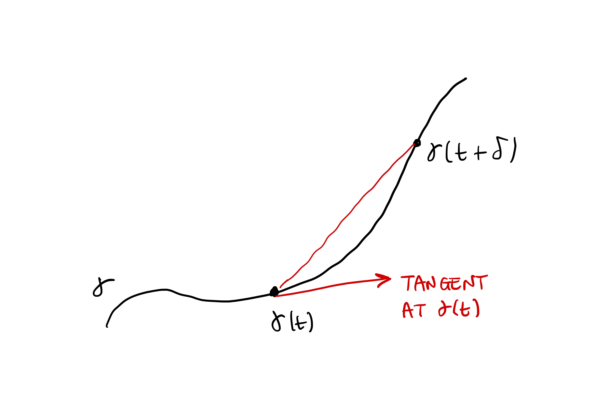
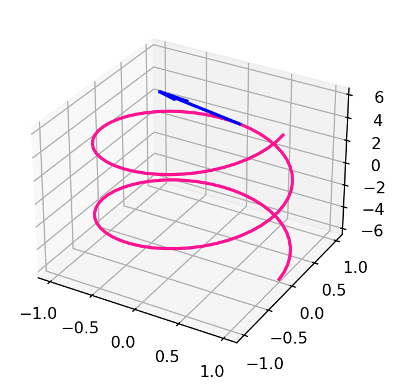
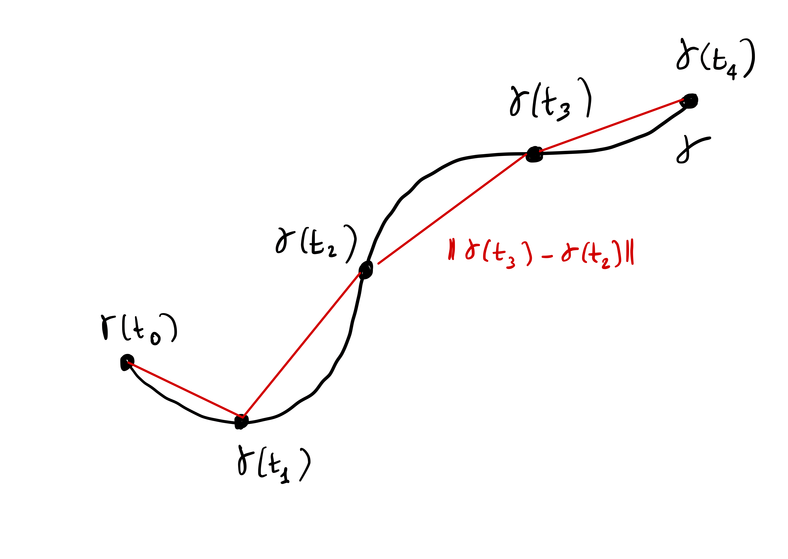
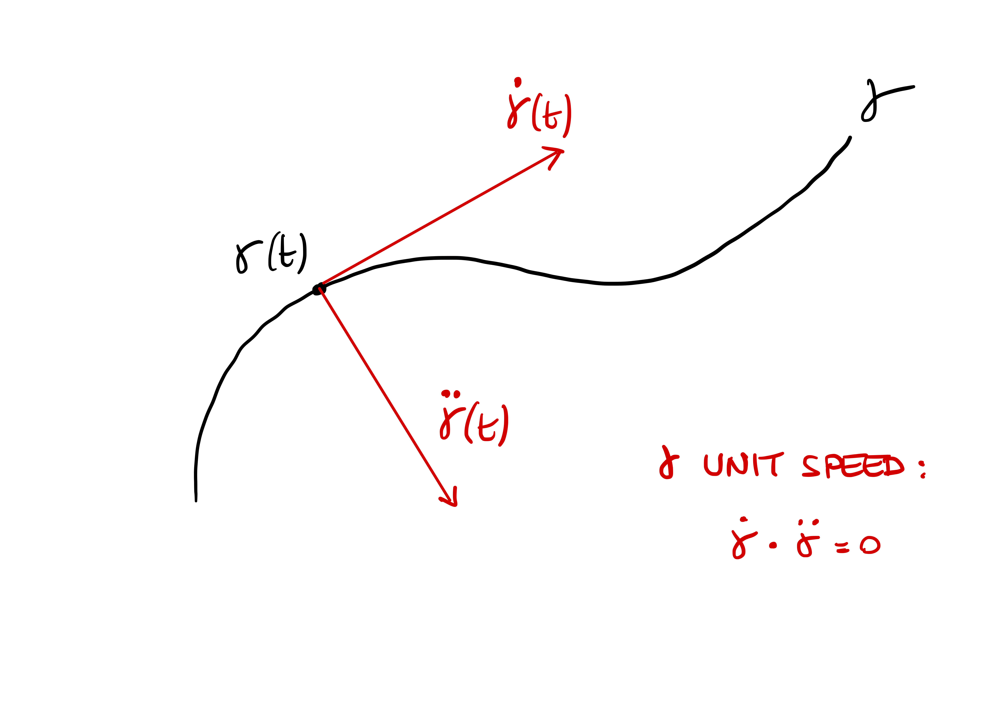
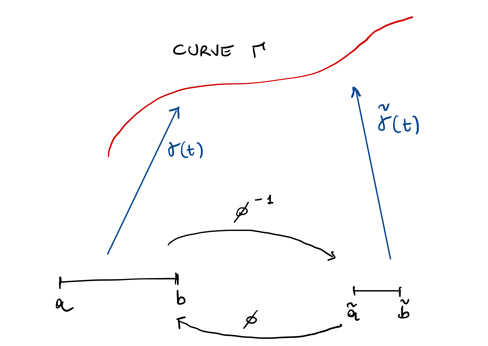
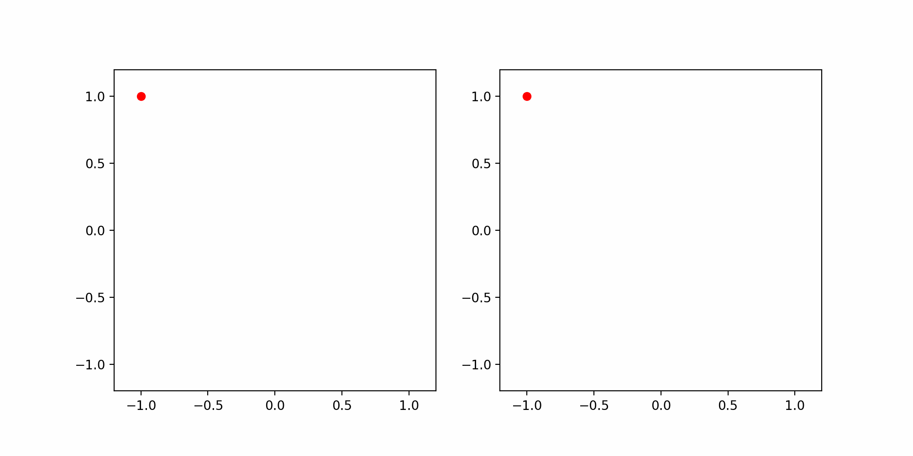
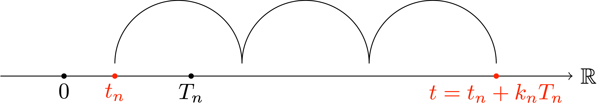

1 Curves
Curves are 1D objects in the 2D or 3D space. For example in two dimensions one could think of a straight line, a hyperbole or a circle. These can be all described by an equation in the \(x\) and \(y\) coordinates: respectively \[ y = 2x + 1\,, \quad y = e^x \,, \quad x^2 + y^2 = 1 \,. \]


Goal
The aim of this course is to study curves by differentiating them.
Question
In what sense do we differentiate the above curves?
It is clear that we need a way to mathematically describe the curves. One way of doing it is by means of Cartesian equations. This means that the curve is described as the set of points \((x,y) \in \mathbb{R}^2\) where the equation \[ f(x,y) = c \,, \] is satisfied, where \[ f : \mathbb{R}^2 \to \mathbb{R} \,. \] is some given function, and \[ c \in \mathbb{R} \] some given value. In other words, the curve is identified with the subset of \(\mathbb{R}^2\) given by \[ C = \{ (x,y) \in \mathbb{R}^2 \, \colon \, f(x,y)=c \} \,. \] For example, in the case of the straight line, we would have \[ f(x,y) = y - 2x \,, \quad c = 1 \,. \] while for the circle \[ f(x,y) = x^2 + y^2 \,\,, c = 1 \,. \] But what about for example a helix in 3 dimensions? It would be more difficult to find an equation of the form \[ f(x,y,z) = 0 \] to describe such object.

Problem
We need a unified and convenient way to describe curves.
This can be done via parametrization.
1.1 Parametrized curves
Rather than Cartesian equations, a more useful way of thinking about curves is viewing them as the path traced out by a moving point. If \(\pmb{\gamma}(t)\) represents the position a point in \(\mathbb{R}^n\) at time \(t\), the whole curve can be identified by the function \[ \pmb{\gamma} \ \colon \mathbb{R} \to \mathbb{R}^n \,, \,\,\, \pmb{\gamma} = \pmb{\gamma}(t) \,. \]
This motivates the following definition of parametrized curve, which will be our main definition of curve.
Definition 1: Parametrized curve
A parametrized curve in \(\mathbb{R}^n\) is a function \[
\pmb{\gamma} \ \colon (a,b) \to \mathbb{R}^n \,.
\]
where
\[ - \infty \leq a < b \leq \infty \,. \]
A few remarks:
- The symbol \((a,b)\) denotes an open interval \[ (a,b) = \{ t \in \mathbb{R} \ \colon \ a < t < b \}\,. \]
- The requirement that \[ -\infty \leq a < b \leq \infty \] means that the interval \((a,b)\) is possibly unbounded.
- For each \(t \in (a,b)\) the quantity \(\pmb{\gamma}(t)\) is a vector in \(\mathbb{R}^n\).
- The components of \(\pmb{\gamma}(t)\) are denoted by \[ \pmb{\gamma}(t) = ( \gamma_1(t), \ldots, \gamma_n(t) ) \,, \] where the components are functions \[ \gamma_i \ \colon (a,b) \to \mathbb{R} \,, \] for all \(i = 1, \ldots, n\).
1.2 Parametrizing Cartesian curves
At the start we said that examples of curves in \(\mathbb{R}^2\) were the straight line, the hyperbole and the circle, with equations \[ y = 2x + 1\,, \quad y = e^x \,, \quad x^2 + y^2 = 1 \,. \] We saw that these can be represented by Cartesian equations \[ f(x,y) = c \] for some function \(f \ \colon \mathbb{R}^2 \to \mathbb{R}\) and value \(c \in \mathbb{R}\). Curves that can be represented in this way are called level curves. Let us give a precise definition.
Definition 2: Level curve
A level curve in \(\mathbb{R}^n\) is a set \(C \subset \mathbb{R}^n\) which can be described as \[
C= \{ (x_1,\ldots,x_n) \in \mathbb{R}^n \ \colon \ f(x_1,\ldots,x_n) = c \}
\] for some given function \[
f \ \colon \mathbb{R}^n \to \mathbb{R}
\] and value \[
c \in \mathbb{R} \,.
\]
We now want to represent level curves by means of parametrizations.
Definition 3
Suppose given a level curve \(C \subset \mathbb{R}^n\). We say that a curve \[
\pmb{\gamma} \ \colon (a,b) \to \mathbb{R}^n
\] parametrizes \(C\) if \[
C = \{ (\gamma_1(t), \ldots, \gamma_n(t) ) \ \colon \ t \in (a,b) \} \,.
\]
Question
Can we represent the level curves we saw above by means of a parametrization \(\pmb{\gamma}\)?
The answer is YES, as shown in the following examples.
Example 4: Parametrizing the straight line
The straight line \[
y = 2x + 1
\]
is a level curve with \[ C = \{ (x,y) \in \mathbb{R}^2 \ \colon \ f(x,y) = c \} \,, \] where \[ f(x,y) := y -2x \,, \quad c :=1 \,. \]
How do we represent \(C\) as a parametrized curve \(\pmb{\gamma}\)? We know that the curve is 2D, therefore we need to find a function \[ \pmb{\gamma} \ \colon (a,b) \to \mathbb{R}^2 \] with componenets \[ \pmb{\gamma}(t) = (\gamma_1(t),\gamma_2(t)) \, . \] The curve \({\pmb{\gamma}}\) needs to be chosen so that it parametrizes the set \(C\), in the sense that \[ C = \{ (\gamma_1(t), \gamma_2(t)) \ \colon \ t \in (a,b) \} \,. \tag{1.1}\] Thus we need to have \[ (x,y) = (\gamma_1,\gamma_2) \,. \tag{1.2}\] How do we define such \(\pmb{\gamma}\)? Note that the points \((x,y)\) in \(C\) satisfy \[ (x,y) \in C \iff y = 2x +1 \,. \] Therefore, using (1.2), we have that \[ \gamma_1 = x \,, \quad \gamma_2 = y = 2x + 1 \] from which we deduce that \(\pmb{\gamma}\) must satisfy \[ \gamma_2(t) = 2 \gamma_1(t) + 1 \tag{1.3}\] for all \(t \in (a,b)\). We can then choose \[ \gamma_1(t) := t \,, \] and from (1.3) we deduce that \[ \gamma_2 (t) = 2 t + 1 \,. \] This choice of \(\pmb{\gamma}\) works: \[\begin{align} C & = \{ (x,2x+1) \ \colon \ x \in \mathbb{R} \} \\ & = \{ (t,2t+1) \ \colon \ - \infty < t < \infty \} \\ & = \{ (\gamma_1(t),\gamma_2(t)) \ \colon \ - \infty < t < \infty \} \,, \end{align}\] where in the second line we just swapped the symbol \(x\) with the symbol \(t\). In this case we have to choose the time interval as \[ (a,b) = (-\infty,\infty) \,. \] In this way \(\pmb{\gamma}\) satisfies (1.1) and we have successfully parametrized the straight line \(C\).
Remark 5: Parametrization is not unique
Let us consider again the straight line \[
C = \{ (x,y) \in \mathbb{R}^2 \ \colon \ 2x+1 = y \} \,.
\] We saw that \(\pmb{\gamma} \colon (-\infty,\infty) \to \mathbb{R}^2\) defined by \[
\pmb{\gamma}(t):=(t,2t+1)
\] is a parametrization of \(C\). But of course any \(\pmb{\gamma}\) satisfying \[
\gamma_2(t) = 2 \gamma_1(t) + 1
\] would yield a parametrization of \(C\). For example one could choose \[
\gamma_1 (t) = 2t \,, \quad \gamma_2(t) = 2 \gamma_1(t) + 1 = 4t + 1 \,.
\] In general, any time rescaling would work: the curve \(\pmb{\gamma}\) defined by \[
\gamma_1 (t) = nt \,, \quad \gamma_2(t) = 2 \gamma_1(t) + 1 = 2nt + 1
\] parametrizes \(C\) for all \(n \in \mathbb{N}\). Hence there are infinitely many parametrizations of \(C\).
Example 6: Parametrizing the circle
The circle \(C\) is described by all the points \((x,y) \in \mathbb{R}^2\) such that \[
x^2 + y^2 = 1\,.
\] Therefore if we want to find a curve \[
\pmb{\gamma} = (\gamma_1,\gamma_2)
\] which parametrizes \(C\), this has to satisfy \[
\gamma_1 (t)^2 + \gamma_2(t)^2 = 1
\tag{1.4}\] for all \(t \in (a,b)\).
How to find such curve? We could proceed as in the previous example, and set \[
\gamma_1(t):=t \,.
\] Then (1.4) implies \[
\gamma_2 (t) = \sqrt{1-t^2}\,,
\] from which we also deduce that \[
- 1 \leq t \leq 1
\] are the only admissible values of \(t\). However this curve does not represent the full circle \(C\), but only the upper half, as seen in the plot below.
Simlarly, another solution to (1.4) would be \(\pmb{\gamma}\) with \[ \gamma_1(t)=t \,, \quad \gamma_2 (t) = - \sqrt{1-t^2}\,, \] for \(t \in [-1,1]\). However this choice does not parametrize the full circle \(C\) either, but only the bottom half, as seen in the plot below.
How to represent the whole circle? Recall the trigonometric identity \[ \cos(t)^2 + \sin(t)^2 = 1 \] for all \(t \in \mathbb{R}\). This suggests to choose \(\pmb{\gamma}\) as \[ \gamma_1(t):=\cos(t)\,, \quad \gamma_2(t):=\sin(t) \] for \(t \in [0,2\pi)\). This way \(\pmb{\gamma}\) satisfies (1.4), and actually parametrizes \(C\), as shown below.
Note the following:
- If we had chosen \(t \in [0,4\pi]\) then \(\pmb{\gamma}\) would have covered \(C\) twice.
- If we had chosen \(t \in [0,\pi]\), then \(\pmb{\gamma}\) would have covered the upper semi-circle
- If we had chosen \(t \in [\pi,2\pi]\), then \(\pmb{\gamma}\) would have covered the lower semi-circle
- Similarly, we can choose \(t \in [\pi/6, \pi /2]\) to cover just a portion of \(C\), as shown below.

Finally we are also able to give a mathematical description of the 3D Helix.
Example 7: Parametrizing the helix
The Helix plotted above can be parametrized by \[
\pmb{\gamma} \ \colon (-\infty,\infty) \to \mathbb{R}^3
\] defined by \[
\gamma_1(t) = \cos(t)\,, \,\,
\gamma_2(t) = \sin(t)\,, \,\,
\gamma_3(t) = t \,.
\] The above equations are in line with our intuition: the helix can be drawn by tracing a circle while at the same time lifting the pencil.
1.3 Smooth curves
Let us recall the definition of parametrized curve.
Definition 8: Parametrized curve
A parametrized curve in \(\mathbb{R}^n\) is a function \[
{\pmb{\gamma}}\ \colon (a,b) \to \mathbb{R}^n \,.
\] where
\[ (a,b) = \{ t \in \mathbb{R}\ \colon \ a < t < b \} \,, \] with \[ - \infty \leq a < b \leq \infty \,. \] The components of \({\pmb{\gamma}}(t) \in \mathbb{R}^n\) are denoted by \[ {\pmb{\gamma}}(t) = ( \gamma_1(t), \ldots, \gamma_n(t) ) \,, \] where the components are functions \[ \gamma_i \ \colon (a,b) \to \mathbb{R}\,, \] for all \(i = 1, \ldots, n\).
As we already mentioned, the aim of the course is to study curves by differentiating them. Let us see what that means for curves.
Definition 9: Smooth functions
A scalar function \(f \ \colon (a,b) \to \mathbb{R}\) is called smooth if the derivative \[
\frac{d^n f}{dt^n}
\] exists for all \(n \geq 1\) and \(t \in (a,b)\).
We will denote the first, second and third derivatives of \(f\) as follows: \[ \dot f := \frac{d f}{dt} \,, \quad \ddot f := \frac{d^2 f}{dt^2} \,, \quad \dddot f := \frac{d^3 f}{dt^3} \,. \]
Example 10
The function \(f(x)=x^4\) is smooth, with \[\begin{align*}
& \frac{d f}{dt} = 4x^3 ,\,\, \frac{d^2 f}{dt^2} = 12 x^2 \,, \\
& \frac{d^3 f}{dt^3} = 24 x ,\,\, \frac{d^4 f}{dt^4} = 24 \,, \\
& \frac{d^n f}{dt^n} = 0 \, \text{ for all } \, n \geq 5 \,.
\end{align*}\] Other examples smooth functions are polynomials, as well as \[
f(t) = \cos(t) , \,\, f(t) = \sin(t) \,, \,\, f(t) = e^t \,.
\]
Definition 11
Let \({\pmb{\gamma}}\ \colon (a,b) \to \mathbb{R}^n\) with \[
{\pmb{\gamma}}(t) = ( {\pmb{\gamma}}_1(t), \ldots, {\pmb{\gamma}}_n(t) )
\] be a parametrized curve. We say that \({\pmb{\gamma}}\) is smooth if the components \[
{\pmb{\gamma}}_i \ \colon (a,b) \to \mathbb{R}
\] are smooth for all \(i=1,\ldots,n\). The derivatives of \({\pmb{\gamma}}\) are \[
\frac{d^k{\pmb{\gamma}}}{dt^k} := \left( \frac{d^k\gamma_1}{dt^k} , \ldots, \frac{d^k\gamma_n}{dt^k} \right)
\] for all \(k \in \mathbb{N}\). As a shorthand, we will denote the first derivative of \({\pmb{\gamma}}\) as \[
\dot{{\pmb{\gamma}}}:= \frac{d{\pmb{\gamma}}}{dt} = \left( \frac{d\gamma_1}{dt} , \ldots, \frac{d\gamma_n}{dt} \right)
\] and the second by \[
\ddot{{\pmb{\gamma}}}:= \frac{d^2{\pmb{\gamma}}}{dt^2} = \left( \frac{d^2\gamma_1}{dt^2} , \ldots, \frac{d^2\gamma_n}{dt^2} \right) \,.
\]
In Figure 1.1 we skectch a smooth and a non-smooth curve. Notice that the curve on the right is smooth, except for the point \(x\).
We will work under the following assumption.
Assumption
All the parametrized curves in this lecture notes are assumed to be smooth.
Example 12
The circle \[
{\pmb{\gamma}}(t) = (\cos(t),\sin(t))
\] is a smooth parametrized curve, since both \(\cos(t)\) and \(\sin(t)\) are smooth functions. We have \[
\dot{{\pmb{\gamma}}}= (-\sin(t),\cos(t)) \,.
\] For example the derivative of \({\pmb{\gamma}}\) at the point \((0,1)\) is given by \[
\dot{{\pmb{\gamma}}}( \pi/2) = (-\sin(\pi/2),\cos(\pi/2)) = (-1,0) \,.
\] The plot of the circle and the derivative vector at \((-1,0)\) can be seen in Figure 1.2.
1.4 Tangent vectors
Looking at Figure 1.2, it seems like the vector \[ \dot{{\pmb{\gamma}}}(\pi/2) = (-1,0) \] is tangent to the circle at the point \[ {\pmb{\gamma}}(\pi/2) = (0,1) \,. \] Is this a coincidence? Not that all. Let us look at the definition of derivative at a point: \[ \dot{{\pmb{\gamma}}}(t) := \lim_{\delta \to 0} \frac{{\pmb{\gamma}}(t + \delta) - {\pmb{\gamma}}(t)}{\delta} \,. \] If we just look at the quantity \[ \frac{{\pmb{\gamma}}(t + \delta) - {\pmb{\gamma}}(t)}{\delta} \] for non-negative \(\delta\), we see that this vector is parallel to the chord joining \({\pmb{\gamma}}(t)\) to \({\pmb{\gamma}}(t + \delta)\), as shown in Figure 1.3 below. As \(\delta \to 0\), the length of the chord tends to zero. However the direction of the chord becomes parallel to that of the tangent vector of the curve \({\pmb{\gamma}}\) at \({\pmb{\gamma}}(t)\). Since \[ \frac{{\pmb{\gamma}}(t + \delta) - {\pmb{\gamma}}(t)}{\delta} \to \dot{{\pmb{\gamma}}}(t) \] as \(\delta \to 0\), we see that \(\dot{{\pmb{\gamma}}}(t)\) is parallel to the tangent of \({\pmb{\gamma}}\) at \({\pmb{\gamma}}(t)\), as showin in Figure 1.3.

The above remark motivates the following definition.
Definition 13: Tangent vector
Let \({\pmb{\gamma}}\ \colon (a,b) \to \mathbb{R}^n\) be a parametrized curve. The tangent vector to \({\pmb{\gamma}}\) at the point \({\pmb{\gamma}}(t)\) is defined as \[
\dot{{\pmb{\gamma}}}(t) \in \mathbb{R}^n \,.
\]
Example 14: Tangent vector to helix
The helix is described by the parametric curve \[
{\pmb{\gamma}}\ \colon \mathbb{R}\to \mathbb{R}^3
\] with \[
{\pmb{\gamma}}_1(t) = \cos (t)\, , \,\,
{\pmb{\gamma}}_2(t) = \sin (t)\, , \,\,
{\pmb{\gamma}}_3(t) = t .
\] This is plotted in Figure 1.4 below. The tangent vector at point \({\pmb{\gamma}}(t)\) is given by \[
\dot{{\pmb{\gamma}}}(t) = ( -\sin(t), \cos(t) , 1) \,.
\] For example in Figure 1.4 we plot the tangent vector at time \(t = \pi/2\), that is, \[
\dot{{\pmb{\gamma}}}(\pi/2) = (-1,0,1) \,.
\] The above looks very similar to the tangent vector to the circle. Except that there is a \(z\) component, and that component is constant and equal to \(1\). Intuitively this means that the helix is lifting from the plane \(xy\) with constant speed with respect to the \(z\)-axis. We will soon give a name to this concept.

Remark 15: Avoiding potential ambiguities
Sometimes it will happen that a curve self intersects, meaning that there are two time instants \(t_1\) and \(t_2\) and a point \(p \in \mathbb{R}^n\) such that \[
p = {\pmb{\gamma}}(t_1) = {\pmb{\gamma}}(t_2)\,.
\] In this case there is ambiguity in talking about the tangent vector at the point \(p\): in principle there are two tangent vectors \(\dot{{\pmb{\gamma}}}(t_1)\) and \(\dot{{\pmb{\gamma}}}(t_2)\), and it could happen that \[
\dot{{\pmb{\gamma}}}(t_1) \neq \dot{{\pmb{\gamma}}}(t_1)\,.
\] Thus the concept of tangent at \(p\) is not well-defined. We need then to be more precise and talk about tangent at a certain time-step \(t\), rather than at some point \(p\). We however do not amend Definition 13, but you should keep this potential ambiguity in mind.
Example 16: The Lemniscate, a self intersecting curve
For example consider \({\pmb{\gamma}}\ \colon [0,2\pi] \to \mathbb{R}^2\) defined as \[
{\pmb{\gamma}}_1(t) = \sin (t)\, , \,\,
{\pmb{\gamma}}_2(t) = \sin (t) \cos(t) \, .
\] Such curve is called Lemniscate, see Wikipedia page, and is plotted in Figure 1.5 below. The orgin \((0,0)\) is a point of self-intersection, meaning that \[
{\pmb{\gamma}}(0) = {\pmb{\gamma}}(\pi) = (0,0) \,.
\] The tangent vector at point \({\pmb{\gamma}}(t)\) is given by \[
\dot{{\pmb{\gamma}}}(t) = (\cos(t), \cos^2(t) - \sin^2(t) )
\] and therefore we have two tangents at \((0,0)\), that is, \[
\dot{{\pmb{\gamma}}}(0) = (1,1) \,, \,\,
\dot{{\pmb{\gamma}}}(\pi) = (-1,1) \,.
\]
1.5 Length of curves
For a vector \(\mathbf{v}\in \mathbb{R}^n\) with components \[ \mathbf{v}=(v_1,\ldots,v_n), \] its length is defined by \[ \left\| \mathbf{v} \right\|:= \sqrt{\sum_{i=1}^n v_i^2 } \,. \] The above is just an extension of the Pythagoras theorem to \(\mathbb{R}^n\), and the length of \(v\) is computed from the origin.
If we have a second vector \(\mathbf{u}\in \mathbb{R}^n\), then the quantity \[ \left\| \mathbf{u}-\mathbf{v} \right\|:= \sqrt{\sum_{i=1}^n (u_i-v_i)^2 } \] measures the length of the difference between \(u\) and \(v\).
We would like to define the concept of length of a curve. Intuitively, one could proceed by approximation as in the figure below.

In formulae, this means choosing some time instants \[ t_0, \ldots, t_m \in (a,b) \,. \] The length of the segment connecting \({\pmb{\gamma}}(t_{i-1})\) to \({\pmb{\gamma}}(t_i)\) is given by \[ \left\| {\pmb{\gamma}}(t_i) - {\pmb{\gamma}}(t_{i-1}) \right\| \,. \] Thus \[ L({\pmb{\gamma}}) \approx \sum_{i=1}^m \left\| {\pmb{\gamma}}(t_i) - {\pmb{\gamma}}(t_{i-1}) \right\| \,. \tag{1.5}\] Intuitively, if we increase the number of points \(t_i\), the quantity on the RHS of (1.5) should approximate \(L({\pmb{\gamma}})\) better and better. Let us make this precise.
Definition 17: Partition
A partition \(\mathcal{P}\) of the interval \([a,b]\) is a vector of time instants \[
\mathcal{P} = (t_0,\ldots, t_m) \in [a,b]^{m+1}
\] with \[
t_0 = a < t_1 < \ldots < t_{m-1} < t_m = b \,.
\] If \(\mathcal{P}\) is a partition of \([a,b]\), we define its maximum length as \[
\left\| \mathcal{P} \right\| := \max_{1 \leq i \leq m} |t_{i} - t_{i-1}| \,.
\]
Note that \(\left\| \mathcal{P} \right\|\) measures how fine the partition \(\mathcal{P}\) is.
Definition 18: Length of approximating polygonal curve
Suppose \({\pmb{\gamma}}\colon (a,b) \to \mathbb{R}^n\) is a parametrized curve and \(\mathcal{P}\) a partition of \([a,b]\). We define the length of the polygonal curve connecting the points \[
{\pmb{\gamma}}(t_0)\,, \,\, {\pmb{\gamma}}(t_1) \,, \,\, \ldots, \,\, {\pmb{\gamma}}(t_m)
\] as \[
L({\pmb{\gamma}}, \mathcal{P}) := \sum_{i=1}^m \left\| {\pmb{\gamma}}(t_i) - {\pmb{\gamma}}(t_{i-1}) \right\| \,.
\]
If \(\left\| \mathcal{P} \right\|\) becomes smaller and smaller, that is, the partition \(\mathcal{P}\) is finer and finer, it is reasonable to say that \[ L({\pmb{\gamma}}, \mathcal{P}) \] is approximating the length of \({\pmb{\gamma}}\). We take this as definition of length.
Definition 19: Rectifiable curve and length
Suppose \({\pmb{\gamma}}\colon (a,b) \to \mathbb{R}^n\) is a parametrized curve. We say that \({\pmb{\gamma}}\) is rectifiable if the limit \[
L({\pmb{\gamma}}) = \lim_{ \left\| P \right\| \to 0} \ L({\pmb{\gamma}},\mathcal{P})
\] exists finite. In such case we call \(L({\pmb{\gamma}})\) the length of \({\pmb{\gamma}}\).
This definition definitely corresponds to our geometrical intuition of length of a curve.
Question 20
How do we use such definition in practice to compute the length of a given curve \({\pmb{\gamma}}\)?
Thankfully, when \({\pmb{\gamma}}\) is smooth, the length \(L({\pmb{\gamma}})\) can be characterized in terms of \(\dot{{\pmb{\gamma}}}\). Indeed, when \(\delta\) is small, then the quantity \[ \left\| {\pmb{\gamma}}(t + \delta) - {\pmb{\gamma}}(t) \right\| \] is approximating the length of \({\pmb{\gamma}}\) between \({\pmb{\gamma}}(t)\) and \({\pmb{\gamma}}(t + \delta)\). Multiplying and dividing by \(\delta\) we obtain \[ \frac{\left\| {\pmb{\gamma}}(t + \delta) - {\pmb{\gamma}}(t) \right\|}{\delta} \, \delta \] which for small \(\delta\) is close to \[ \left\| \dot{{\pmb{\gamma}}}(t) \right\| \,\delta \,. \] We can now divide the time interval \((a,b)\) in steps \(t_0, \ldots, t_m\) with \(|t_{i}-t_{i-1}| < \delta\) and obtain \[\begin{align*} \left\| {\pmb{\gamma}}(t_{i}) - {\pmb{\gamma}}(t_{i-1}) \right\| & = \frac{\left\| {\pmb{\gamma}}(t_{i}) - {\pmb{\gamma}}(t_{i-1}) \right\|}{ |t_{i}-t_{i-1}| } |t_{i}-t_{i-1}| \\ & \approx \left\| \dot{{\pmb{\gamma}}}(t_i) \right\| \delta \end{align*}\] since \(\delta\) is small. Therefore \[ L({\pmb{\gamma}}) \approx \sum_{i=1}^m \left\| {\pmb{\gamma}}(t_{i}) - {\pmb{\gamma}}(t_{i-1}) \right\| \approx \sum_{i=1}^m \left\| \dot{{\pmb{\gamma}}}(t_i) \right\| \,\delta \,. \] The RHS is a Riemann sum, therefore \[ L({\pmb{\gamma}}) \approx \int_a^b \left\| \dot{{\pmb{\gamma}}}(t) \right\| \, dt \,. \]
The above argument can be made rigorous, as we see in the next theorem.
Theorem 21: Characterizing the length of \({\pmb{\gamma}}\)
Assume \({\pmb{\gamma}}\ \colon [a,b] \to \mathbb{R}^n\) is a parametrized curve, with \([a,b]\) bounded. Then \({\pmb{\gamma}}\) is rectifiable and \[
L({\pmb{\gamma}}) = \int_a^b \left\| \dot{{\pmb{\gamma}}}(t) \right\| \, dt \,.
\tag{1.6}\]
Proof
Step 1. The integral in (1.6) is bounded.
Since \({\pmb{\gamma}}\) is smooth, in particular \(\dot{{\pmb{\gamma}}}\) is continuous. Since \([a,b]\) is bounded, then \(\dot{{\pmb{\gamma}}}\) is bounded, that is \[ \sup_{t \in [a,b]} \left\| \dot{{\pmb{\gamma}}}(t) \right\| \leq C \] for some constant \(C \geq 0\). Therefore \[ \int_a^b \left\| \dot{{\pmb{\gamma}}}(t) \right\| \, dt \leq C (b-a) < \infty \,. \]
Since \({\pmb{\gamma}}\) is smooth, in particular \(\dot{{\pmb{\gamma}}}\) is continuous. Since \([a,b]\) is bounded, then \(\dot{{\pmb{\gamma}}}\) is bounded, that is \[ \sup_{t \in [a,b]} \left\| \dot{{\pmb{\gamma}}}(t) \right\| \leq C \] for some constant \(C \geq 0\). Therefore \[ \int_a^b \left\| \dot{{\pmb{\gamma}}}(t) \right\| \, dt \leq C (b-a) < \infty \,. \]
Step 2. Writing (1.6) as limit.
Recalling that \[
L({\pmb{\gamma}}) = \lim_{\left\| \mathcal{P} \right\| \to 0} \ L({\pmb{\gamma}},\mathcal{P}) \,,
\] whenever the limit is finite, in order to show (1.6) we then need to prove \[
L({\pmb{\gamma}},\mathcal{P}) \to \int_a^b \left\| \dot{{\pmb{\gamma}}}(t) \right\| \, dt
\] as \(\left\| \mathcal{P} \right\| \to 0\). Showing the above means proving that: for every \(\varepsilon> 0\) there exists a \(\delta > 0\) such that, if \(\mathcal{P}\) is a partition of \([a,b]\) such that \(\left\| \mathcal{P} \right\|<\delta\), then \[
\left| \int_a^b \left\| \dot{{\pmb{\gamma}}}(t) \right\| \, dt - L({\pmb{\gamma}}, \mathcal{P} ) \right| < \varepsilon\,.
\tag{1.7}\]
Step 3. First estimate in (1.7).
This first estimate is easy, and only relies on the Fundamental Theorem of Calculus. To be more precise, we will show that each polygonal has shorter length than \(\int_{a}^b \left\| \dot{{\pmb{\gamma}}}(t) \right\| \, dt\). To this end, take an arbitrary partition \(\mathcal{P} = (t_0, \ldots, t_m)\) of \([a,b]\). Then for each \(i = 1,\ldots,m\) we have \[
\left\| {\pmb{\gamma}}(t_i) - {\pmb{\gamma}}(t_{i-1}) \right\| = \left\| \int_{t_{i-1}}^{t_i} \dot{{\pmb{\gamma}}}(t)\, dt \right\| \leq \int_{t_{i-1}}^{t_i}\left\| \dot{{\pmb{\gamma}}}(t) \right\| \, dt
\] where we used the Fundamental Theorem of calculus, and usual integral properties. Therefore by definition \[\begin{align*}
L({\pmb{\gamma}},\mathcal{P} ) & = \sum_{i=1}^m \left\| {\pmb{\gamma}}(t_i) - {\pmb{\gamma}}(t_{i-1}) \right\| \\
& \leq \sum_{i=1}^m \int_{t_{i-1}}^{t_i} \left\| \dot{{\pmb{\gamma}}}(t) \right\| \, dt \\
& = \int_{a}^b \left\| \dot{{\pmb{\gamma}}}(t) \right\| \, dt \,.
\end{align*}\] We have then shown \[
L({\pmb{\gamma}}, \mathcal{P}) \leq \int_{a}^b \left\| \dot{{\pmb{\gamma}}}(t) \right\| \, dt
\tag{1.8}\] for all partitions \(\mathcal{P}\).
Step 4. Second estimate in (1.7).
The second estimate is more delicate. We need to carefully construct a polygonal so that its length is close to \(\int_a^b \left\| \dot{{\pmb{\gamma}}} \right\| \,dt\). This will be possible by uniform continuity of \(\dot{{\pmb{\gamma}}}\). Indeed, note that \(\dot{{\pmb{\gamma}}}\) is continuous on the compact set \([a,b]\). Therefore it is uniformly continuous by the Heine-Borel Theorem. Fix \(\varepsilon>0\). By uniform continuity of \(\dot{{\pmb{\gamma}}}\) there exists \(\delta >0\) such that \[
|t-s| < \delta \implies \left\| \dot{{\pmb{\gamma}}}(t)-\dot{{\pmb{\gamma}}}(s) \right\| < \frac{ \varepsilon}{b-a} \,.
\tag{1.9}\] Let \(\mathcal{P} = (t_0, \ldots, t_m)\) be a partition of \([a,b]\) with \(\left\| \mathcal{P} \right\| < \delta\). Recall that \[
\left\| \mathcal{P} \right\| = \max_{i=1,\ldots ,m} |t_i - t_{i-1}| \,.
\] Therefore the condition \(\left\| \mathcal{P} \right\| < \delta\) implies \[
|t_i - t_{i-1}| < \delta
\tag{1.10}\] for each \(i = 1, \ldots, m\). For all \(i = 1, \ldots, m\) and \(s \in [t_{i-1},t_i]\) we have \[\begin{align*}
{\pmb{\gamma}}(t_i) - {\pmb{\gamma}}(t_{i-1}) & = \int_{t_{i-1}}^{ t_i } \dot{{\pmb{\gamma}}}(t)\, dt \\
& = \int_{t_{i-1}}^{ t_i } \dot{{\pmb{\gamma}}}(s) + (\dot{{\pmb{\gamma}}}(t) - \dot{{\pmb{\gamma}}}(s)) \, dt \\
& = ( t_i - t_{i-1} ) \dot{{\pmb{\gamma}}}(s) + \int_{t_{i-1}}^{ t_i } (\dot{{\pmb{\gamma}}}(t) - \dot{{\pmb{\gamma}}}(s)) \, dt
\end{align*}\] The idea now is that the integral on the RHS can be made arbitrarily small by choosing a sufficiently fine partition, thanks to the uniform continuity of \(\dot{{\pmb{\gamma}}}\) on the compact interval \([a,b]\). In details, taking the absolute value of the above equation yields \[
\left\| {\pmb{\gamma}}(t_i) - {\pmb{\gamma}}(t_{i-1}) \right\| = \left\| ( t_i - t_{i-1} ) \dot{{\pmb{\gamma}}}(s) +
\int_{t_{i-1}}^{ t_i } (\dot{{\pmb{\gamma}}}(t) - \dot{{\pmb{\gamma}}}(s)) \, dt \right\|
\tag{1.11}\] We can now use the reverse triangle inequality \[
| \| x\| - \left\| y \right\|| \leq \left\| x-y \right\|\,,
\] for all \(x,y \in \mathbb{R}^n\), which implies \[
\left\| x+y \right\| = \left\| x - (-y) \right\| \geq \| x \| - \left\| y \right\|
\] for all \(x,y \in \mathbb{R}^n\). Applying the above to (1.11) we get \[
\left\| {\pmb{\gamma}}(t_i) - {\pmb{\gamma}}(t_{i-1}) \right\| \geq
( t_i - t_{i-1} ) \left\| \dot{{\pmb{\gamma}}}(s) \right\| -
\left\| \int_{t_{i-1}}^{ t_i } (\dot{{\pmb{\gamma}}}(t) - \dot{{\pmb{\gamma}}}(s)) \, dt \right\|
\tag{1.12}\] By standard properties of integral we also have \[
\left\| \int_{t_{i-1}}^{ t_i } (\dot{{\pmb{\gamma}}}(t) - \dot{{\pmb{\gamma}}}(s)) \, dt \right\|
\leq
\int_{t_{i-1}}^{ t_i } \left\| \dot{{\pmb{\gamma}}}(t) - \dot{{\pmb{\gamma}}}(s) \right\| \, dt\,,
\] so that (1.12) implies \[
\left\| {\pmb{\gamma}}(t_i) - {\pmb{\gamma}}(t_{i-1}) \right\| \geq ( t_i - t_{i-1} ) \left\| \dot{{\pmb{\gamma}}}(s) \right\| - \int_{t_{i-1}}^{ t_i } \left\| \dot{{\pmb{\gamma}}}(t) - \dot{{\pmb{\gamma}}}(s) \right\| \, dt\,.
\tag{1.13}\] Since \(t,s \in [t_{i-1},t_i]\), then \[
|t-s| \leq | t_{i} - t_{i-1} | < \delta
\] where the last inequality follows by (1.10). Thus by uniform continuity (1.9) we get \[
\left\| \dot{{\pmb{\gamma}}}(t) - \dot{{\pmb{\gamma}}}(s) \right\| < \frac{\varepsilon}{b-a} \,.
\] We can therefore further estimate (1.13) and obtain \[\begin{align*}
\left\| {\pmb{\gamma}}(t_i) - {\pmb{\gamma}}(t_{i-1}) \right\| & \geq ( t_i - t_{i-1} ) \left\| \dot{{\pmb{\gamma}}}(s) \right\| - \int_{t_{i-1}}^{ t_i } \left\| \dot{{\pmb{\gamma}}}(t) - \dot{{\pmb{\gamma}}}(s) \right\| \, dt \\
& \geq ( t_i - t_{i-1} ) \left\| \dot{{\pmb{\gamma}}}(s) \right\| - ( t_i - t_{i-1} ) \frac{\varepsilon}{b-a} \, dt \,.
\end{align*}\] Dividing the above by \(t_i - t_{i-1}\) we get \[
\frac{ \left\| {\pmb{\gamma}}(t_i) - {\pmb{\gamma}}(t_{i-1}) \right\| }{ t_i - t_{i-1} } \geq
\left\| \dot{{\pmb{\gamma}}}(s) \right\| - \frac{\varepsilon}{b-a} \,.
\] Integrating the above over \(s\) in the interval \([t_{i-1}, t_i ]\) we get \[
\left\| {\pmb{\gamma}}(t_i) - {\pmb{\gamma}}(t_{i-1}) \right\| \geq \int_{t_{i-1}}^{ t_i } \left\| \dot{{\pmb{\gamma}}}(s) \right\| \, ds - \frac{\varepsilon}{b-a} (t_i - t_{i-1}) \,.
\] Summing over \(i=1,\ldots,m\) we get \[
L(\mathcal{P},{\pmb{\gamma}}) \geq \int_{a}^b \left\| \dot{{\pmb{\gamma}}}(s) \right\| \, ds - \varepsilon
\tag{1.14}\] since \[
\sum_{i=1}^m (t_i - t_{i-1}) = t_m - t_0 = b - a \,.
\]
Conclusion.
Putting together (1.8) and (1.14) we get \[
\int_{a}^b \left\| \dot{{\pmb{\gamma}}}(s) \right\| \, ds - \varepsilon\leq L(\mathcal{P},{\pmb{\gamma}})
\leq \int_{a}^b \left\| \dot{{\pmb{\gamma}}}(s) \right\| \, ds
\] which implies (1.7), concluding the proof.
Thanks to the above theorem we have now a way to compute \(L({\pmb{\gamma}})\). Let us check that we have given a meaningful definition of length by computing \(L({\pmb{\gamma}})\) on known examples.
Example 22: Length of Circle
The circle of radius \(R\) is parametrized by \({\pmb{\gamma}}\ \colon [0,2\pi] \to \mathbb{R}^2\) defined by \[
{\pmb{\gamma}}(t) = (R\cos(t), R\sin(t)) \,.
\] Then \[
\dot{{\pmb{\gamma}}}(t) = (-R\sin(t), R\cos(t))
\] and \[\begin{align*}
\left\| \dot{{\pmb{\gamma}}}(t) \right\| & = \sqrt{ {\dot\gamma}_1^2(t) + {\dot \gamma}_2^2(t) } \\
& = R \sqrt{ \sin^2(t) + \cos^2 (t)} = R\,.
\end{align*}\] Therefore \[
L({\pmb{\gamma}}) = \int_{0}^{2\pi} \left\| \dot{{\pmb{\gamma}}}(t) \right\| \, dt = \int_0^{2\pi} R \, dt = 2 \pi R
\] as expected.
Example 23: Length of helix
Let us consider one full turn of the Helix of radius \(R\) and rise \(H\). This is parametrized by \[
{\pmb{\gamma}}(t) = (R\cos(t), R\sin(t) ,Ht)
\] for \(t \in [0,2\pi]\). Then \[
\dot{{\pmb{\gamma}}}(t) = (-R\sin(t), R\cos(t) , H) \,,
\] and \[\begin{align*}
\left\| \dot{{\pmb{\gamma}}}(t) \right\| & = \sqrt{ {\dot{\gamma}}_1^2 + {\dot{\gamma}}_2^2 + {\dot{\gamma}}_3^2 } \\
& = \sqrt{ R^2\sin^2(t) + R^2\cos^2(t) + H^2 } = \sqrt{R^2 + H^2} \,.
\end{align*}\] Therefore \[
L({\pmb{\gamma}}) = \int_0^{2\pi} \left\| \dot{{\pmb{\gamma}}}(t) \right\| \, dt = 2 \pi \sqrt{R^2 + H^2} \,.
\]
Note that if \(H>0\) then \[ 2\pi \sqrt{R^2 + H^2} > 2\pi R \,, \] showing that the length of one full turn of the Helix is larger than the length of a disk. This might seem counterintuitive as it looks like one turn of the Helix can be superimposed to the circle by squashing the Helix on the plane. However this squashing action clearly causes a bit of shrinkage, as shown in the above estimate.
1.6 Arc-length
We have just shown in Theorem 21 that the length of a regular curve \({\pmb{\gamma}}\ \colon [a,b] \to \mathbb{R}^n\) with \([a,b]\) bounded is given by \[ L({\pmb{\gamma}}) = \int_a^b \left\| \dot{{\pmb{\gamma}}}(t) \right\| \,dt \,. \] Using this formula, we introduce the notion of length of a portion of \({\pmb{\gamma}}\).
Definition 24: Arc-length
Let \({\pmb{\gamma}}\, \colon (a,b) \to \mathbb{R}^n\) be a curve, with \((a,b)\) possibly unbounded. We define the arc-length of \({\pmb{\gamma}}\) starting at the point \({\pmb{\gamma}}(t_0)\) as the function \(s \colon \mathbb{R}\to \mathbb{R}\) defined by \[
s(t) := \int_{t_0}^t \left\| \dot{{\pmb{\gamma}}}(\tau) \right\|\, d\tau \,.
\]
Remark 25
A few remarks:
Arc-length is well-defined
Indeed, \({\pmb{\gamma}}\) is smooth, and so \(\dot{{\pmb{\gamma}}}\) is continuous. WLOG assume \(t \geq t_0\). Then \[ s(t) = \int_{t_0}^t \left\| \dot{{\pmb{\gamma}}}(\tau) \right\|\, d\tau \leq (t-t_0) \max_{ \tau \in [t_0,t] } \left\| \dot{{\pmb{\gamma}}}(\tau) \right\| < \infty \,. \]
We always have \[ s(t_0)=0\,. \]
We have \[ t > t_0 \implies s(t) \geq 0 \] and \[ t < t_0 \implies s(t) \leq 0 \,. \]
Choosing a different starting point changes the arc-length by a constant:
For example define \(\tilde{s}\) as the arc-length starting from \(\tilde{t}_0\) \[ \tilde{s}(t) := \int_{\tilde{t}_0}^t \left\| \dot{{\pmb{\gamma}}}(\tau) \right\| \, d\tau \,. \] Then by the properties of integral \[\begin{align*} s(t) & = \int_{t_0}^t \left\| \dot{{\pmb{\gamma}}}(\tau) \right\| \, d\tau \\ & = \int_{t_0}^{\tilde{t}_0} \left\| \dot{{\pmb{\gamma}}}(\tau) \right\| \, d\tau + \int_{\tilde{t}_0}^{t} \left\| \dot{{\pmb{\gamma}}}(\tau) \right\| \, d\tau \\ & = \int_{t_0}^{\tilde{t}_0} \left\| \dot{{\pmb{\gamma}}}(\tau) \right\| \, d\tau + \tilde{s}(t) \,. \end{align*}\] Hence \[ s = c + \tilde{s} \] with \[ c := \int_{t_0}^{\tilde{t}_0} \left\| \dot{{\pmb{\gamma}}}(\tau) \right\| \, d\tau \,. \] Note that \(c\) is the arc-length of \({\pmb{\gamma}}\) between the starting points \({\pmb{\gamma}}(t_0)\) and \({\pmb{\gamma}}(\tilde{t}_0)\).
The arc-length is a differentiable function, with \[ \dot s(t) = \frac{d}{dt} \int_{t_0}^t \left\| \dot{{\pmb{\gamma}}}(\tau) \right\| \, d\tau = \left\| \dot{{\pmb{\gamma}}}(t) \right\| \,. \]
Since \(\dot{{\pmb{\gamma}}}\) is continuous, the above follows by the Fundamental Theorem of Calculus.
Example 26: Circle
The circle of radius \(R\) is parametrized by \({\pmb{\gamma}}\ \colon [0,2\pi] \to \mathbb{R}^2\) defined by \[
{\pmb{\gamma}}(t) = (R\cos(t), R\sin(t)) \,.
\] Then \[
\dot{{\pmb{\gamma}}}(t) = (-R\sin(t), R\cos(t)) \,, \quad \left\| \dot{{\pmb{\gamma}}}(t) \right\| = R \,.
\] Therefore, for any fixed \(t_0 \in [0,2\pi]\) we have \[
s(t) = \int_{t_0}^{t} \left\| \dot{{\pmb{\gamma}}}(\tau) \right\| \, d\tau = \int_{t_0}^{t} R \, d\tau = (t - t_0) R \,.
\] In particular we see that \(\dot s = R\) is constant.
Example 27: Logarithmic spiral
The Logarithmic spiral is defined by \({\pmb{\gamma}}\ \colon [0,2\pi] \to \mathbb{R}^2\) with \[
{\pmb{\gamma}}(t) = (e^{kt} \cos(t), e^{kt} \sin(t)) \,,
\] where \(k \in \mathbb{R}\), \(k \neq 0\), is called the growth factor. Then \[
{\dot \gamma}_1(t) = e^{kt} ( k \cos(t) - \sin(t) )
\] \[
{\dot \gamma}_2(t) = e^{kt} ( k \sin(t) + \cos(t) )
\] and so, after some calculations, \[
\left\| \dot{{\pmb{\gamma}}}(t) \right\|^2 = {\dot{\gamma}}_1^2 + {\dot{\gamma}}_2^2 = (k^2 + 1) e^{2kt} \,.
\] The arc-length starting from \(t_0\) is \[\begin{align*}
s(t) & = \int_{t_0}^t \left\| \dot{{\pmb{\gamma}}}(\tau) \right\| \, d \tau \\
& = \sqrt{k^2 + 1} \int_{t_0}^t e^{k \tau} \, d \tau \\
& = \frac{\sqrt{k^2 + 1}}{k} ( e^{kt} - e^{k t_0} ) \,.
\end{align*}\]

1.7 Scalar product in \(\mathbb{R}^n\)
Let us start by defining the scalar product in \(\mathbb{R}^2\).
Definition 28: Scalar product in \(\mathbb{R}^2\)
Let \(\mathbf{u}, \mathbf{v}\in \mathbb{R}^2\) and denote by \(\theta \in [0,\pi]\) the angle formed by \(u\) and \(v\). The scalar product between \(\mathbf{u}\) and \(\mathbf{v}\) is defined by \[
\mathbf{u}\cdot \mathbf{v}:= \|\mathbf{u}\| \|\mathbf{v}\| \cos(\theta) \,.
\]
Remark 29
Two vectors in the plane form two complementary angles. To avoid ambiguity, we choose the smallest of the two angles. This is enforced in Definition 28 by requiring that \(\theta \in [0,\pi]\).
The scalar product is maximized for \(\theta = 0\), for which we have \[ \mathbf{u}\cdot \mathbf{v}= \|\mathbf{u}\| \|\mathbf{v}\| \cos(\theta) = \|\mathbf{u}\| \|\mathbf{v}\| \,. \]
It is instead minimized for \(\theta = \pi\), for which \[ \mathbf{u}\cdot \mathbf{v}= \|\mathbf{u}\| \|\mathbf{v}\| \cos(\theta) = - \|\mathbf{u}\| \|\mathbf{v}\| \,. \]
For each \(\mathbf{u},\mathbf{v}\in \mathbb{R}^2\) the Cauchy-Schwarz inequality holds: \[ -\|\mathbf{u}\| \|\mathbf{v}\| \leq \mathbf{u}\cdot \mathbf{v}\leq \|\mathbf{u}\| \|\mathbf{v}\| \] The above is immediate from the observation that \(|\cos(\theta)| \leq 1\).
The observations in points 2-3 imply that the Cauchy-Schwarz inequality is sharp, in the sense that both inequalities are attained.
Usually the Cauchy-Schwarz inequality is written in the equivalent form \[ | \mathbf{u}\cdot \mathbf{v}| \leq \| \mathbf{u}\| \| \mathbf{v}\| \]
By the above observations it follows that equality holds if and only if \(\mathbf{u}\) and \(\mathbf{v}\) are parallel.
Definition 30: Orthogonal vectors
Let \(\mathbf{u}, \mathbf{v}\in \mathbb{R}^2\). We say that \(\mathbf{u}\) and \(\mathbf{v}\) are orthogonal if \[
\mathbf{u}\cdot \mathbf{v}= 0
\]
Proposition 31: Bilinearity and symmetry of scalar product
Let \(\mathbf{u}, \mathbf{v}, \mathbf{w}\in \mathbb{R}^2\) and \(\lambda \in \mathbb{R}\). Then
Symmetry: It holds \[ \mathbf{u}\cdot \mathbf{v}= \mathbf{v}\cdot \mathbf{u} \]
Bilinearity: They hold \[ \lambda (\mathbf{u}\cdot \mathbf{v}) = (\lambda \mathbf{u}) \cdot \mathbf{v}= \mathbf{u}\cdot (\lambda \mathbf{v}) \,, \] \[ \mathbf{u}\cdot (\mathbf{v}+ \mathbf{w}) = \mathbf{u}\cdot \mathbf{v}+ \mathbf{u}\cdot \mathbf{w}\,. \]
The above proposition is saying that the scalar product is bilinear and symmetric. We leave the proof to the reader: only the condition \[ \mathbf{u}\cdot (\mathbf{v}+ \mathbf{w}) = \mathbf{u}\cdot \mathbf{v}+ \mathbf{u}\cdot \mathbf{w}\,. \] is non-trivial, due to the presence of 3 vectors.
Proposition 32: Scalar products written wrt euclidean coordinates
Denote by \[
\mathbf{e}_1 = (1,0) \,, \quad \mathbf{e}_2 = (0,1)
\] the euclidean basis of \(\mathbb{R}^2\). Let \(\mathbf{u}, \mathbf{v}\in \mathbb{R}^2\) and denote by \[
\mathbf{u}= (u_1,u_2) = u_1 \mathbf{e}_1 + u_2 \mathbf{e}_2
\] \[
\mathbf{v}= (v_1,v_2) = v_1 \mathbf{e}_1 + v_2 \mathbf{e}_2
\] their coordinates with respect to \(\mathbf{e}_1, \mathbf{e}_2\). Then \[
\mathbf{u}\cdot \mathbf{v}= u_1v_2 + u_2 v_2 \,.
\]
Proof
Note that \[
\mathbf{e}_1 \cdot \mathbf{e}_1 = 1 \,, \quad \mathbf{e}_2 \cdot \mathbf{e}_2 = 1 \,, \quad
\mathbf{e}_1 \cdot \mathbf{e}_2 = \mathbf{e}_2 \cdot \mathbf{e}_1 = 0 \,.
\] Using the bilinearity of scalar product we have \[\begin{align*}
\mathbf{u}\cdot \mathbf{v}& = (u_1 \mathbf{e}_1 + u_2 \mathbf{e}_2) \cdot (v_1 \mathbf{e}_1 + v_2 \mathbf{e}_2) \\
& = u_1 v_1 \mathbf{e}_1 \cdot \mathbf{e}_1 + u_1 v_2 \mathbf{e}_1 \cdot \mathbf{e}_2 +
u_2 v_1 \mathbf{e}_2 \cdot \mathbf{e}_1 + u_2 v_2 \mathbf{e}_2 \cdot \mathbf{e}_2 \\
& = u_1 v_1 + u_2 v_2 \,.
\end{align*}\]
The above proposition provides a natural way to define a scalar product in \(\mathbb{R}^n\).
Definition 33: Scalar product in \(\mathbb{R}^n\)
Let \(\mathbf{u}, \mathbf{v}\in \mathbb{R}^n\) and denote their coordinates by \[
\mathbf{u}= (u_1, \ldots, u_n) \,, \quad
\mathbf{v}= (v_1, \ldots, v_n) \,.
\] We define the scalar product between \(\mathbf{u}\) and \(\mathbf{v}\) by \[
\mathbf{u}\cdot \mathbf{v}:= \sum_{i=1}^n u_i v_i \,.
\]
The scalar product in \(\mathbb{R}^n\) is still bilinear and symmetric, as detailed in the following proposition:
Proposition 34: Bilinearity and symmetry of scalar product in \(\mathbb{R}^n\)
Let \(\mathbf{u}, \mathbf{v}, \mathbf{w}\in \mathbb{R}^n\) and \(\lambda \in \mathbb{R}\). Then
Symmetry: It holds \[ \mathbf{u}\cdot \mathbf{v}= \mathbf{v}\cdot \mathbf{u} \]
Bilinearity: They hold \[ \lambda (\mathbf{u}\cdot \mathbf{v}) = (\lambda \mathbf{u}) \cdot \mathbf{v}= \mathbf{u}\cdot (\lambda \mathbf{v}) \,, \] \[ \mathbf{u}\cdot (\mathbf{v}+ \mathbf{w}) = \mathbf{u}\cdot \mathbf{v}+ \mathbf{u}\cdot \mathbf{w}\,. \]
The proof of the above proposition is an easy check, and is left to the reader for exercise. We can now define orthogonal vectors in \(\mathbb{R}^n\).
Definition 35
Let \(\mathbf{u}, \mathbf{v}\in \mathbb{R}^n\). We say that \(\mathbf{u}\) and \(\mathbf{v}\) are orthogonal if \[
\mathbf{u}\cdot \mathbf{v}= 0 \,.
\]
Proposition 36: Differentiating the scalar product
Let \({\pmb{\gamma}}, {\pmb{\eta}}\ \colon (a,b) \to \mathbb{R}^n\) be parametrized curves. The scalar map \[
{\pmb{\gamma}}\cdot {\pmb{\eta}}\ \colon (a,b) \to \mathbb{R}
\] is smooth, and \[
\frac{d}{dt} ({\pmb{\gamma}}\cdot {\pmb{\eta}}) = \dot{{\pmb{\gamma}}}\cdot {\pmb{\eta}}+ {\pmb{\gamma}}\cdot \dot{{\pmb{\eta}}}
\] for all \(t \in (a,b)\).
Proof
Denote by \[
{\pmb{\gamma}}= (\gamma_1 ,\ldots , \gamma_n) \,, \quad {\pmb{\eta}}= (\eta_1, \ldots , \eta_n)
\] the coordinates of \({\pmb{\gamma}}\) and \({\pmb{\eta}}\). Clearly the map \[
t \mapsto {\pmb{\gamma}}\cdot {\pmb{\eta}}= \sum_{i=1}^n \gamma_i \eta_i
\] is smooth, being sum and product of smooth functions.
Concerning the formula, by definition of scalar product and linearity of the derivative we have \[\begin{align*} \frac{d}{dt} ({\pmb{\gamma}}\cdot {\pmb{\eta}}) & = \frac{d}{dt} \left( \sum_{i=1}^n \gamma_i \eta_i \right) \\ & = \sum_{i=1}^n \frac{d}{dt} ( \gamma_i \eta_i ) \\ & = \sum_{i=1}^n {\dot\gamma}_i \eta_i + \dot{\gamma}_i {\dot \eta}_i \\ & = \dot{{\pmb{\gamma}}}\cdot {\pmb{\eta}}+ {\pmb{\gamma}}\cdot \dot{{\pmb{\eta}}} \,, \end{align*}\] where in the second to last equality we used the product rule of differentiation.
Concerning the formula, by definition of scalar product and linearity of the derivative we have \[\begin{align*} \frac{d}{dt} ({\pmb{\gamma}}\cdot {\pmb{\eta}}) & = \frac{d}{dt} \left( \sum_{i=1}^n \gamma_i \eta_i \right) \\ & = \sum_{i=1}^n \frac{d}{dt} ( \gamma_i \eta_i ) \\ & = \sum_{i=1}^n {\dot\gamma}_i \eta_i + \dot{\gamma}_i {\dot \eta}_i \\ & = \dot{{\pmb{\gamma}}}\cdot {\pmb{\eta}}+ {\pmb{\gamma}}\cdot \dot{{\pmb{\eta}}} \,, \end{align*}\] where in the second to last equality we used the product rule of differentiation.
1.8 Speed of a curve
Given a curve \({\pmb{\gamma}}\) we defined the tangent vector at \({\pmb{\gamma}}(t)\) to be \[ \dot{{\pmb{\gamma}}}(t) \,. \] The tangent vector measures the change of direction of a curve. Therefore the magnitude of \(\dot{{\pmb{\gamma}}}\) can be interpreted as the rate of change, i.e. speed, of the curve.
Definition 37: Speed of a curve
Let \({\pmb{\gamma}}\ \colon (a,b) \to \mathbb{R}^n\) be a curve. We define the speed of \({\pmb{\gamma}}\) at the point \({\pmb{\gamma}}(t)\) by \[
\left\| \dot{{\pmb{\gamma}}}(t) \right\| \,.
\]
Remark 38
The derivative of the arc-length \(s\) gives the speed of \({\pmb{\gamma}}\): \[
s(t) := \int_{t_0}^t \left\| \dot{{\pmb{\gamma}}}(\tau) \right\| \, d\tau \,\, \implies \,\,
\dot s(t) = \left\| \dot{{\pmb{\gamma}}}(t) \right\| \,.
\]
Definition 39: unit-speed curve
Let \({\pmb{\gamma}}\ \colon (a,b) \to \mathbb{R}^n\) be a curve. We say that \({\pmb{\gamma}}\) is a unit-speed curve if \[
\left\| \dot{{\pmb{\gamma}}}(t) \right\| = 1 \,, \quad \forall \, t \in (a,b) \,.
\]
The reason why we introduce unit-speed curves is because they make calculations easy. A crucial identity which allows to simplify calculations for unit-speed curves is given in the next proposition.
Proposition 40
Let \({\pmb{\gamma}}\ \colon (a,b) \to \mathbb{R}^n\) be a unit-speed curve. Then \[
\dot{{\pmb{\gamma}}}\cdot \ddot{{\pmb{\gamma}}}= 0 \,, \quad \forall \, t \in (a,b) \,.
\]
Proof
Let us consider the identity \[
\dot{{\pmb{\gamma}}}(t) \cdot \dot{{\pmb{\gamma}}}(t) = \sum_{i=1}^n {\dot{{\pmb{\gamma}}}}_i^2(t) = \left\| \dot{{\pmb{\gamma}}}(t) \right\|^2 \,.
\tag{1.15}\] Since \({\pmb{\gamma}}\) is unit-speed we have \[
\left\| \dot{{\pmb{\gamma}}}(t) \right\|^2 = 1 \quad \forall \, t \in (a,b) \,.
\] and therefore \[
\frac{d}{dt} \left( \left\| \dot{{\pmb{\gamma}}}(t) \right\|^2 \right) = 0 \quad \forall \, t \in (a,b) \,.
\tag{1.16}\] We can differentiate the LHS of (1.15) to get \[
\frac{d}{dt} (\dot{{\pmb{\gamma}}}\cdot \dot{{\pmb{\gamma}}}) = \ddot{{\pmb{\gamma}}}\cdot \dot{{\pmb{\gamma}}}
+ \dot{{\pmb{\gamma}}}\cdot \ddot{{\pmb{\gamma}}}= 2 \dot{{\pmb{\gamma}}}\cdot \ddot{{\pmb{\gamma}}}\,.
\tag{1.17}\] where we used Proposition 36 and symmetry of the scalar product. Differentiating (1.15) and using (1.16)-(1.17) we conclude \[
2 \dot{{\pmb{\gamma}}}\cdot \ddot{{\pmb{\gamma}}}= 0 \quad \forall \, t \in (a,b) \,,
\] which gives the thesis.
Remark 41
Proposition 40 is saying that if \({\pmb{\gamma}}\) is unit-speed, then its tangent vector \(\dot{{\pmb{\gamma}}}\) is always orthogonal to the second derivative \(\ddot{{\pmb{\gamma}}}\). This information will be used in the next Chapter to define the Frenet Frame: an orthonormal basis of vectors which moves smoothly along the curve. The Frenet frame will be crucial for studing local behavior of curves.

1.9 Reparametrization
As we have observed in the Examples of Chapter 1, there is in general no unique way to parametrize a curve. However we would like to understand when two parametrizations are related. In other words, we want to clarify the concept of equivalence of two parametrizations. First we need some notation:
Notation
Let \(X,Y,Z\) be sets and \[ f \colon X \to Y \,, \quad g \colon Y \to Z \] two maps. The composition of \(f\) and \(g\) is the map \[ g \circ f \colon X \to Z \,, \quad (g \circ f)(x) := g(f(x)) \]
The identity map on \(X\) is denoted by \[ {\mathop{\mathrm{Id}}}_{X} \colon X \to X \,, \quad {\mathop{\mathrm{Id}}}_{X} (x) := x \,, \quad \forall \, x \in X \,. \] The identity in \(\mathbb{R}\) will just be denoted by \(\mathop{\mathrm{Id}}\).
The function \(f \colon X \to Y\) is invertible if there exists a function \(g \colon Y \to X\) such that \[ g \circ f = {\mathop{\mathrm{Id}}}_{X} \,, \quad f \circ g = {\mathop{\mathrm{Id}}}_{Y} \,, \] The map \(g\), if it exists, is called the inverse of \(f\) and is denoted by \[ g:= f^{-1} \,. \]
It is elementary to check that the inverse is unique if it exists.
Definition 42: Diffeomorphism
Let \(\phi\ \colon (a,b) \to (\tilde{a},\tilde{b})\). We say that \(\phi\) is a diffeomorphism if the following conditions are satisfied:
\(\phi\) is invertible: There exists a map \[ \phi^{-1} \ \colon (\tilde{a},\tilde{b}) \to (a,b) \] such that \[ \phi^{-1} \circ \phi= \phi\circ \phi^{-1} = \mathop{\mathrm{Id}}\,, \] where \(\mathop{\mathrm{Id}}\colon \mathbb{R}\to \mathbb{R}\) is the identity map on \(\mathbb{R}\), that is, \[ \mathop{\mathrm{Id}}(t) = t \,, \quad \forall \, t \in \mathbb{R}\,. \]
\(\phi\) is smooth,
\(\phi^{-1}\) is smooth.
Definition 43: Reparametrization
Let \({\pmb{\gamma}}\ \colon (a,b) \to \mathbb{R}^n\) be a parametrized curve. A reparametrization of \({\pmb{\gamma}}\) is another parametrized curve \(\tilde{{\pmb{\gamma}}} \ \colon (\tilde{a},\tilde{b}) \to \mathbb{R}^n\) such that \[
\widetilde{{\pmb{\gamma}}}(t) = {\pmb{\gamma}}(\phi(t)) \quad \forall \, t \in (\tilde{a},\tilde{b})\,,
\tag{1.18}\] for a suitable diffeomorphism \[
\phi\colon (\tilde{a},\tilde{b}) \to (a,b) \,.
\] We call both \(\phi\) and \(\phi^{-1}\) reparametrization maps.
Remark 44
Since \(\phi\) is invertible with smooth inverse, \(\widetilde{{\pmb{\gamma}}}\) is a reparametrization of \({\pmb{\gamma}}\) \[
{\pmb{\gamma}}(t) = {\pmb{\gamma}}( \phi( \phi^{-1}(t) ) ) = \widetilde{{\pmb{\gamma}}}( \phi^{-1}(t) ) \,, \quad
\forall \, t \in (a,b) \,.
\]
Remark 45
Given a parametrized curve \({\pmb{\gamma}}\), this identifies a 1D shape \(\Gamma \subset \mathbb{R}^n\) defined by \[ \Gamma := \{ {\pmb{\gamma}}(t) \, \colon \, t \in (a,b) \} \,. \] \(\Gamma\) is called the support of \(\gamma\).
A reparametrization \(\widetilde{{\pmb{\gamma}}}\) is just an equivalent way to describe \(\Gamma\).
For \({\pmb{\gamma}}\) and \(\widetilde{{\pmb{\gamma}}}\) to be reparametrizations of each other, there must exist a smooth rule \(\phi\) (the diffeomorphism) to switch from one to another, according to formula (1.18). This concept is sketched in Figure 1.7.

Example 46: Change of orientation
The map \(\phi\colon (\tilde{a},\tilde{b}) \to (a,b)\) defined by \[
\phi(t) := - t
\] is a diffeomoprhism. The inverse of \(\phi\) is given by \({\phi}^{-1} \colon (a,b) \to (\tilde{a},\tilde{b})\) defined by \[
{\phi}^{-1} (t) = - t \,.
\] Note that \(\phi\) can be used to reverse the orientation of a curve.
Example 47: Reversing orientation of circle
Consider the unit circle parametrized as usual by \({\pmb{\gamma}}\ \colon [0,2\pi] \to \mathbb{R}^2\) defined as \[
{\pmb{\gamma}}(t) := (\cos (t), \sin(t)) \,.
\] To reverse the orientation we can reparametrize \({\pmb{\gamma}}\) by using the diffeomorphism \[
\phi(t):= - t \,.
\] This way we obtain \(\tilde{{\pmb{\gamma}}}:= {\pmb{\gamma}}\circ \phi\ \colon [0,2\pi] \to [0, 2\pi]\), \[\begin{align*}
\tilde{{\pmb{\gamma}}}(t) & = {\pmb{\gamma}}(\phi(t)) \\
& = (\cos(-t),\sin(-t)) \\
& = (\cos(t),-\sin(t)) \,,
\end{align*}\] where in the last identity we used the properties of \(\cos\) and \(\sin\). Notice that in this way, for example, \[
{\pmb{\gamma}}(\pi/2) = (0,1) \,, \quad {\pmb{\gamma}}(\pi/2) = (0,-1) \,.
\]

Example 48: Change of speed
Let \(k > 0\). The map \(\phi\colon (\tilde{a},\tilde{b}) \to (a,b)\) defined by \[ \phi(t) := kt \] is a diffeomoprhism. The inverse of \(\phi\) is given by \({\phi}^{-1} \colon (a,b) \to (\tilde{a},\tilde{b})\) defined by \[ {\phi}^{-1} (t) = \frac{t}{k} \,. \] Note that \(\phi\) can be used to change the speed of a curve:
- If \(k > 1\) the speed increases ,
- If \(0 < k < 1\) the speed decreases.
Example 49: Doubling the speed of Lemniscate
Recall the Lemniscate \[ {\pmb{\gamma}}(t): = (\sin(t), \sin(t)\cos(t) ) \,, \quad t \in [0,2\pi] \,. \] We can double the speed of the Lemniscate by using the Using the diffeomorphism \[ \phi(t):=2t \,. \] This way we obtain \(\tilde{{\pmb{\gamma}}}:= {\pmb{\gamma}}\circ \phi\ \colon [0,\pi] \to [0, 2\pi]\) with \[ \widetilde{{\pmb{\gamma}}}(t) = {\pmb{\gamma}}(\phi(t)) = (\sin(2t), \sin(2t)\cos(2t)) \,. \] In this case we have that \[ \dot{\widetilde{{\pmb{\gamma}}}}(t) = 2 \dot{{\pmb{\gamma}}}(\phi(t)) \,. \]
The above follows by chain rule. Indeed, \(\dot{\phi} = 2\), so that \[ \dot{\widetilde{{\pmb{\gamma}}}}= \frac{d}{dt} \left( {\pmb{\gamma}}(\phi(t)) \right) = \dot{\phi}(t) \dot{{\pmb{\gamma}}}(\phi(t)) = 2 \dot{{\pmb{\gamma}}}(\phi(t))\,. \]

1.10 Unit-speed reparametrization
For a curve \({\pmb{\gamma}}\) we wish to find a reparametrization \(\widetilde{{\pmb{\gamma}}}\) which is unit-speed: \[ \left\| \dot{\widetilde{{\pmb{\gamma}}}} \right\| = 1 \,, \quad \forall \, t \in (a,b) \,. \] We will see that this is possible if and only if the curve \({\pmb{\gamma}}\) is regular, in the sense of Definition 50 below.
Definition 50: Regular points
Let \({\pmb{\gamma}}\ \colon (a,b) \to \mathbb{R}^n\) be a parametrized curve. We say that:
- \({\pmb{\gamma}}(t_0)\) is a regular point if \[ \dot{{\pmb{\gamma}}}(t_0) \neq 0 \,. \]
- A point \({\pmb{\gamma}}(t_0)\) is singular if it is not regular.
- The curve \({\pmb{\gamma}}\) is regular if every point of \({\pmb{\gamma}}\) is regular, that is, \[ \dot{{\pmb{\gamma}}}(t) \neq 0 \,, \quad \forall \, t \in (a,b) \,. \]
Note that when \(\dot{{\pmb{\gamma}}}(t_0) = 0\), this means the curve is stopping at time \(t_0\). Before making an example, let us prove a useful lemma about diffeomorphisms.
Lemma 51
Let \(\phi\ \colon (a,b) \to (\tilde{a},\tilde{b})\) be a diffeomorphism. Then \[
\dot{\phi} (t) \neq 0 \quad \forall \, t \in (a,b) \,.
\]
Proof
We know that \(\phi\) is smooth with smooth inverse \[
\psi := \phi^{-1} \ \colon (\tilde{a},\tilde{b}) \to (a,b) \,.
\] In particular it holds \[
\psi (\phi(t)) = t \,, \quad \forall \, t \in (a,b) \,.
\] We can differentiate both sides of the above expression to get \[
\frac{d}{dt} \left( \psi (\phi(t)) \right) = 1 \,.
\tag{1.19}\] We can differentiate the LHS by chain rule \[
\frac{d}{dt} \left( \psi (\phi(t)) \right) = \dot\psi (\phi(t)) \, \dot\phi(t) \,.
\] From (1.19) we then get \[
\dot\psi (\phi(t)) \, \dot\phi(t) = 1 \, , \quad \forall \, t \in (a,b) \,.
\] As the RHS is non-zero, we must have that both the elements in the LHS product are non-zero. In particular we conclude \[
\dot\phi(t) \neq 0 \, , \quad \forall \, t \in (a,b) \,.
\]
Example 52: A curve with one singular point
Consider the parabola \[ \Gamma := \{ (x,y) \in \mathbb{R}^2 \, \colon \, y=x^2 , \, -1 < x < 1\} \,. \] Both curves \({\pmb{\gamma}}, {\pmb{\eta}}\ \colon (-1,1) \to \mathbb{R}^2\) \[ {\pmb{\gamma}}(t) = (t,t^2) \,, \quad {\pmb{\eta}}(t) = (t^3, t^6) \,. \] are parametrizations of \(\Gamma\). However \({\pmb{\eta}}\) is not a reparametrization of \({\pmb{\gamma}}\).
Indeed, suppose by contradiction there exist a diffeomorphism \[ \phi \colon (-1,1) \to (-1,1) \] such that \[ {\pmb{\eta}}(t) = {\pmb{\gamma}}(\phi(t)) \,, \quad \forall \, t \in (-1,1) \, . \] Substituting the definitions of \({\pmb{\gamma}}\) and \({\pmb{\eta}}\) we obtain \[ (t^3,t^6) = (\phi(t), \phi(t)^2) \,, \quad \forall \, t \in (-1,1)\,, \] which forces \[ \phi(t) = t^3 \,, \quad \forall \, t \in (-1,1)\,. \] Note that \(f\) is invertible in \((-1,1)\) with inverse \[ \phi^{-1}(t) = \sqrt[3]{x} \,. \] However \(\phi^{-1}\) is not smooth at \(t=0\), and therefore \(\phi\) is not a diffeomorphism. Alternatively we could have just noticed that \[ \dot \phi(t) = 3t^2 \quad \implies \quad \dot\phi(0) = 0 \,, \] and therefore \(\phi\) cannot be a diffeomorphism due to Lemma 51.
To understand what is going on with the two parametrizations, let us look at the derivatives: \[ \dot{{\pmb{\gamma}}}(t) = (1,2t) \,, \quad \dot{{\pmb{\eta}}} (t)= (3t^2,6t^5) \,. \] We notice a difference:
- \({\pmb{\gamma}}\) is a regular parametrization, as the first component of \(\dot{{\pmb{\gamma}}}\) is non-zero and so \(\dot{{\pmb{\gamma}}}\neq 0\).
- \({\pmb{\eta}}\) is regular if and only if \(t \neq 0\).
If we animate the plots of the above parametrizations we see that:
- The point \({\pmb{\gamma}}(t)\) moves with constant horizontal speed
- The point \({\pmb{\eta}}(t)\) is decelerating for \(t < 0\), it stops at \(t = 0\), and then accelerates again for \(t>0\).

The previous example shows that, altough \({\pmb{\gamma}}\) and \({\pmb{\eta}}\) describe the same parabola \(\Gamma\), they are not reparametrizations of each other. We have seen that this is due to the fact that \({\pmb{\gamma}}\) is regular, while \({\pmb{\eta}}\) is not. Indeed we can prove that regularity is invariant by reparametrization.
Proposition 53: Regularity is invariant for reparametrization
Let \({\pmb{\gamma}}\ \colon (a,b) \to \mathbb{R}^n\) be a parametrized curve and suppose that \({\pmb{\gamma}}\) is regular, that is, \[
\dot{{\pmb{\gamma}}}(t) \neq 0 \,, \quad \forall \, t \in (a,b) \,.
\] Then every reparametrization of \({\pmb{\gamma}}\) is also regular.
Proof
Let \(\widetilde{{\pmb{\gamma}}}\ \colon (\tilde{a},\tilde{b}) \to \mathbb{R}^n\) be a reparametrization of \({\pmb{\gamma}}\). Then there exist \(\phi\ \colon (\tilde{a},\tilde{b}) \to (a,b)\) diffeomorphism such that \[
\tilde {\pmb{\gamma}}(t) = {\pmb{\gamma}}(\phi(t)) \,, \quad \forall \, t \in (\tilde{a},\tilde{b}) \,.
\] By the chain rule we have \[
\dot{\widetilde{{\pmb{\gamma}}}}(t) = \frac{d}{dt} \left( {\pmb{\gamma}}(\phi(t)) \right) = \dot{{\pmb{\gamma}}}(\phi(t)) \dot\phi(t) \,.
\] As \(\phi\) is a diffeomorphism, by Lemma 51 it holds \[
\dot \phi(t) \neq 0 \,, \quad \forall\, t \in (\tilde{a},\tilde{b}) \,,
\] Therefore \[
\dot{\widetilde{{\pmb{\gamma}}}}(t) \neq 0 \quad \iff \quad \dot{{\pmb{\gamma}}}(\phi(t)) \neq 0 \,.
\tag{1.20}\] Since \({\pmb{\gamma}}\) is regular we infer \[
\dot{{\pmb{\gamma}}}(\phi(t)) \neq 0 \,, \quad \forall\, t \in (\tilde{a},\tilde{b}) \,.
\] From (1.20) we conclude that \(\widetilde{{\pmb{\gamma}}}\) is regular.
Example 54
Let us go back to the parabola \[
\Gamma := \{ (x,y) \in \mathbb{R}^2 \, \colon \, y=x^2 , \, -1 < x < 1\} \,,
\] with the two parametrizations \({\pmb{\gamma}}, {\pmb{\eta}}\ \colon [-1,1] \to \mathbb{R}^2\) with \[
{\pmb{\gamma}}(t) = (t,t^2) \,, \quad
{\pmb{\eta}}(t) = (t^3, t^6) \,.
\] We have that \[
\dot{{\pmb{\gamma}}}(t) = (1,2t) \,, \quad \dot{{\pmb{\eta}}} (t)= (3t^2,6t^5) \,.
\] Therefore
- \({\pmb{\gamma}}\) is a regular parametrization,
- \({\pmb{\eta}}(t)\) is regular only for \(t \neq 0\).
Proposition 53 implies that \({\pmb{\eta}}\) is not a reparametrization of \({\pmb{\gamma}}\).
We now define unit-speed reparametrizations:
Definition 55: unit-speed reparametrization
Let \({\pmb{\gamma}}\colon (a,b) \to \mathbb{R}^n\) be a parametrized curve. A unit-speed reparametrization of \({\pmb{\gamma}}\) is a reparametrization \(\widetilde{{\pmb{\gamma}}}\colon (\tilde{a},\tilde{b}) \to \mathbb{R}^n\) which is unit-speed, i.e., \[
\left\| \dot{\widetilde{{\pmb{\gamma}}}}(t) \right\| = 1 \,, \quad \forall \, t \in (\tilde{a},\tilde{b}) \,.
\]
The next Theorem states that a curve is regular if and only if it has a unit-speed reparametrization. For the proof, it is crucial to recall the definition of arc-length of a curve \({\pmb{\gamma}}\colon (a,b) \to \mathbb{R}^n\), which is given by \[ s(t):=\int_{t_0}^t \left\| \dot{{\pmb{\gamma}}}(\tau) \right\| \, d\tau \,, \] for some arbitrary \(t_0 \in (a,b)\) fixed. Notice that \[ \dot{s}(t) = \left\| \dot{{\pmb{\gamma}}}(t) \right\| \,. \] Therefore \[ {\pmb{\gamma}}\, \text{ regular} \quad \iff \quad \dot{s}(t) \neq 0 \,. \] In this case the arc-length \(s\) is a diffeomorphism by the Inverse Function Theorem. As it turns out, all the unit-speed reparametrizations of \({\pmb{\gamma}}\) are of the form \[ \widetilde{{\pmb{\gamma}}}= {\pmb{\gamma}}\circ \psi \,, \qquad \psi := \pm s^{-1} + c \] The above statements will be proved in Theorem 56 and Proposition 57 below.
Theorem 56: Existence of unit-speed reparametrization
Let \({\pmb{\gamma}}\) be a parametrized curve. They are equivalent:
- \({\pmb{\gamma}}\) is regular,
- \({\pmb{\gamma}}\) has a unit-speed reparametrization.
Proof
Step 1. Direct implication. Assume \({\pmb{\gamma}}\ \colon (a,b) \to \mathbb{R}^n\) is regular, that is, \[
\dot{{\pmb{\gamma}}}(t) \neq 0 \,, \quad \forall \, t \in (a,b)\,.
\] Let \(s \ \colon (a,b) \to \mathbb{R}\) be the arc-length of \({\pmb{\gamma}}\) starting at any point \(t_0 \in (a,b)\). By the Fundamental Theorem of Calculus we have \[
\dot s (t) = \left\| \dot{{\pmb{\gamma}}}(t) \right\|
\tag{1.21}\] so that \[
\dot s (t) > 0 \,, \quad \forall \, t \in (a,b)\,.
\] The above condition and the Inverse Function Theorem guarantee the existence of a smooth inverse \[
s^{-1} \ \colon (\tilde{a},\tilde{b}) \to (a,b)
\] for some \(\tilde{a}< \tilde{b}\). Define the reparametrization map \(\phi\) as \[
\phi:= s^{-1}
\] and the corresponding reparametrization \(\widetilde{{\pmb{\gamma}}}\) of \({\pmb{\gamma}}\) as \[
\widetilde{{\pmb{\gamma}}}\ \colon (\tilde{a},\tilde{b}) \to \mathbb{R}^n \,, \quad
\widetilde{{\pmb{\gamma}}}:= {\pmb{\gamma}}\circ \phi\,.
\] We claim that \(\widetilde{{\pmb{\gamma}}}\) is unit-speed. Indeed, by definition \[
\widetilde{{\pmb{\gamma}}}:= {\pmb{\gamma}}\circ \phi\quad \implies \quad {\pmb{\gamma}}= \widetilde{{\pmb{\gamma}}}\circ \phi^{-1} = \widetilde{{\pmb{\gamma}}}\circ s \,,
\] or in other words \[
{\pmb{\gamma}}(t) = \widetilde{{\pmb{\gamma}}}(s(t)) \,, \quad \forall \, t \in (a,b) \,.
\] By chain rule \[
\dot{{\pmb{\gamma}}}(t) = \dot{\widetilde{{\pmb{\gamma}}}}(s(t)) \, \dot s(t) = \dot{\widetilde{{\pmb{\gamma}}}}(s(t)) \, \left\| \dot{{\pmb{\gamma}}}(t) \right\|
\] where in the last equality we used (1.21). Taking the absolute value of the above yields \[
\left\| \dot{{\pmb{\gamma}}}(t) \right\| = \left\| \dot{\widetilde{{\pmb{\gamma}}}}(s(t)) \right\| \, \left\| \dot{{\pmb{\gamma}}}(t) \right\| \,.
\tag{1.22}\] Since \({\pmb{\gamma}}\) is regular, we have \[
\left\| \dot{{\pmb{\gamma}}}(t) \right\| \neq 0 \,, \quad \forall \, t \in (a,b)\,.
\] Therefore we can divide (1.22) by \(\left\| \dot{{\pmb{\gamma}}}(t) \right\|\) and obtain \[
\left\| \dot{\widetilde{{\pmb{\gamma}}}}(s(t)) \right\| = 1 \,, \quad \forall \, t \in (a,b) \,.
\] By invertibility of \(s\), the above holds if and only if \[
\left\| \dot{\widetilde{{\pmb{\gamma}}}}(t) \right\| = 1 \,, \quad \forall \, t \in (\tilde{a},\tilde{b}) \,,
\] showing that \(\widetilde{{\pmb{\gamma}}}\) is a unit-speed reparametrization of \({\pmb{\gamma}}\).
Step 2. Reverse implication. Suppose there exists a unit-speed reparametrization of \({\pmb{\gamma}}\) denoted by \[ \widetilde{{\pmb{\gamma}}}\ \colon (\tilde{a},\tilde{b}) \to \mathbb{R}^n \,, \quad \widetilde{{\pmb{\gamma}}}= {\pmb{\gamma}}\circ \phi \] By chain rule \[ \dot{\widetilde{{\pmb{\gamma}}}}(t) = \dot{{\pmb{\gamma}}}(\phi(t)) \, \dot{\phi} (t) \,. \] Taking the norm \[ \left\| \dot{\widetilde{{\pmb{\gamma}}}}(t) \right\| = \left\| \dot{{\pmb{\gamma}}}(\phi(t)) \right\| \, |\dot{\phi} (t)| \,. \] Since \(\widetilde{{\pmb{\gamma}}}\) is unit-speed we obtain \[ \left\| \dot{{\pmb{\gamma}}}(\phi(t)) \right\| \, |\dot \phi(t)| = 1 \,, \quad \forall \, t \in (\tilde{a},\tilde{b}) \,. \tag{1.23}\] Hence none of terms on the LHS can be zero, meaning that \[ \dot{{\pmb{\gamma}}}(\phi(t)) \neq 0 \,, \quad \forall \, t \in (\tilde{a},\tilde{b}) \,. \] As \(\phi\) is invertible, we also have \[ \dot{{\pmb{\gamma}}}(t) \neq 0 \,, \quad \forall \, t \in (a,b) \,, \] proving that \({\pmb{\gamma}}\) is regular.
The proof of Theorem 56 told us that, if \({\pmb{\gamma}}\) is regular, then \[ \widetilde{{\pmb{\gamma}}}= {\pmb{\gamma}}\circ s^{-1} \] is a unit-speed reparametrization of \({\pmb{\gamma}}\). In the next proposition we show that the arc-length \(s\) is essentially the only unit-speed reparametrization of a regular curve.
Proposition 57: Arc-length and unit-speed reparametrization
Let \({\pmb{\gamma}}\ \colon (a,b) \to \mathbb{R}^n\) be a regular curve. Let \(\widetilde{{\pmb{\gamma}}}\ \colon (\tilde{a},\tilde{b}) \to \mathbb{R}^n\) be reparametrization of \({\pmb{\gamma}}\), so that \[ {\pmb{\gamma}}(t) = \widetilde{{\pmb{\gamma}}}( \phi(t) ) , \quad \forall \, t \in (a,b)\,. \] for some diffeomorphism \(\phi\ \colon (a,b) \to (\tilde{a},\tilde{b})\). Denote by \[ s(t):= \int_{t_0}^t \left\| \dot{{\pmb{\gamma}}}(\tau) \right\| \, d \tau \,, \quad t \in (a,b) \] the arc-length of \({\pmb{\gamma}}\) starting at any point \(t_0 \in (a,b)\). We have:
If \(\widetilde{{\pmb{\gamma}}}\) is unit-speed there exists \(c \in \mathbb{R}\) such that \[ \phi(t) = \pm s(t) + c \,, \quad \forall \, t \in (a,b) \,. \tag{1.24}\]
If \(\phi\) is given by (1.24) for some \(c \in \mathbb{R}\), then \(\widetilde{{\pmb{\gamma}}}\) is unit-speed.
Proof
Step 1. First Point. Assume \(\widetilde{{\pmb{\gamma}}}\) is a unit-speed reparametrization of \({\pmb{\gamma}}\): such \(\widetilde{{\pmb{\gamma}}}\) exists by Theorem 56, since \({\pmb{\gamma}}\) is assumed to be regular. This means there exists a reparametrization map \(\phi\) such that \[
{\pmb{\gamma}}(t) = \widetilde{{\pmb{\gamma}}}( \phi(t) ) , \quad \forall \, t \in (a,b)\,.
\] Differentiating the above we get \[
\dot{{\pmb{\gamma}}}(t) = \dot{\widetilde{{\pmb{\gamma}}}}(\phi(t)) \, \dot\phi(t) \,.
\] Taking the norms we then have \[\begin{align*}
\left\| \dot{{\pmb{\gamma}}}(t) \right\| & = \left\| \dot{\widetilde{{\pmb{\gamma}}}}(\phi(t)) \, \dot\phi(t) \right\| \\
& = \left\| \dot{\widetilde{{\pmb{\gamma}}}}(\phi(t)) \right\| \, | \dot\phi(t) | \\
& = | \dot\phi(t) | \,,
\end{align*}\] where in the last equality we used that \(\widetilde{{\pmb{\gamma}}}\) is unit-speed, and so \[
\left\| \dot{\widetilde{{\pmb{\gamma}}}} \right\| \equiv 1 \,.
\] To summarize, so far we have proven that \[
\left\| \dot{{\pmb{\gamma}}}(t) \right\| = | \dot\phi(t) | \,, \quad \forall \, t \in (a,b) \,.
\] Therefore \[
s(t) = \int_{t_0}^t \left\| \dot{{\pmb{\gamma}}}(\tau) \right\| \, d\tau = \int_{t_0}^t | \dot \phi(\tau) | \, d\tau \,.
\] By the Fundamental Theorem of Calculus we get \[
\dot s(t) = |\dot \phi(t) | \quad \forall \, t \in (a,b)
\tag{1.25}\] As \(\phi\) is a diffeomorphism, by Lemma 51 we have \[
\dot \phi(t) \neq 0 \quad \forall \, t \in (a,b) \,.
\] By continuity of \(\dot \phi\) and the Mean Value Theorem we conclude that either \[
\dot \phi(t) > 0 \quad \forall \, t \in (a,b) \,.
\] or \[
\dot \phi(t) < 0 \quad \forall \, t \in (a,b) \,.
\] Therefore (1.25) reads either \[
\dot s(t) = \dot \phi(t) \quad \forall \, t \in (a,b)
\] or \[
\dot s(t) = - \dot \phi(t) \quad \forall \, t \in (a,b)
\] Integrating the last two equations we get \[
\phi= \pm s + c
\] for some \(c \in \mathbb{R}\), concluding the proof.
Step 2. Second Point. Let \(\widetilde{{\pmb{\gamma}}}\) be reparametrization of \({\pmb{\gamma}}\) \[ {\pmb{\gamma}}(t) = \widetilde{{\pmb{\gamma}}}(\phi(t)) \,, \quad \forall \, t \in (a,b) \tag{1.26}\] with \[ \phi:= \pm s + c \] for some \(c \in \mathbb{R}\). Differentiating (1.26) we get \[\begin{align*} \dot{{\pmb{\gamma}}}(t) & = \dot{\widetilde{{\pmb{\gamma}}}}( \phi(t) ) \dot\phi(t) \\ & = \pm \dot{\widetilde{{\pmb{\gamma}}}}( \phi(t) ) \dot s(t) \\ & = \pm \dot{\widetilde{{\pmb{\gamma}}}}( \phi(t) ) \left\| \dot{{\pmb{\gamma}}}(t) \right\| \end{align*}\] where in the last equality we used the Fundamental Theorem of Calculus and definition of \(s\). Taking the absolute values \[ \left\| \dot{{\pmb{\gamma}}}(t) \right\| = \left\| \dot{{\pmb{\gamma}}}(\phi(t)) \right\| \left\| \dot{{\pmb{\gamma}}}(t) \right\| \,. \] Since \({\pmb{\gamma}}\) is regular we have \(\left\| \dot{{\pmb{\gamma}}}(t) \right\| \neq 0\). Hence we can divide by \(\left\| \dot{{\pmb{\gamma}}}(t) \right\|\) and obtain that \[ \left\| \dot{{\pmb{\gamma}}}(\phi(t)) \right\| = 1 \,, \quad \forall \, t \in (a,b) \,. \] As \(\phi\) is invertible, the above is equivalent to \[ \left\| \dot{\widetilde{{\pmb{\gamma}}}}( t ) \right\| = 1 \, \quad \forall \, t \in (\tilde{a},\tilde{b}) \, , \] proving that \(\widetilde{{\pmb{\gamma}}}\) is a unit-speed reparametrization.
Definition 58: Arc-length reparametrization
Let \({\pmb{\gamma}}\) be regular. Proposition 57 tells us that a unit speed reparametrization of \({\pmb{\gamma}}\) is given by \[
\widetilde{{\pmb{\gamma}}}:= {\pmb{\gamma}}\circ s^{-1}
\] with \(s^{-1}\) inverse of the arc-length of \({\pmb{\gamma}}\). We call \(\widetilde{{\pmb{\gamma}}}\) the arc-length reparametrization of \({\pmb{\gamma}}\).
Notation: Arc-length parameter
In the following we will use the letters
- \(s\) to denote the arc-length parameter
- \(t\) to denote an arbitrary parameter
Accordingly the parameter of the arc-length function is \(t\) \[ s = s(t) \] and the parameter of the inverse \(\psi := s^{-1}\) of the arc-length is \(s\) \[ \psi = \psi(s) \] As the arc-length function allows to transition from an arbitrary parameter \(t\) to the arc-length parameter \(s\), the inverse of \(s\) will also be denoted by \[ t = t(s) \]
The above notation might seem confusing, but it actually makes a lot of sense in the long run, as calculations get heavier. Accordingly we have the following notation for the arc-length reparametrization.
Notation: Arc-length reparametrization
Let \({\pmb{\gamma}}\colon (a,b) \to \mathbb{R}^n\) be a regular curve and \(s \colon (a,b) \to (\tilde{a},\tilde{b})\) its arc-length function. Denote by \[
\widetilde{{\pmb{\gamma}}}:= {\pmb{\gamma}}\circ s^{-1}
\] the arc-length reparametrization of \({\pmb{\gamma}}\). According to the above notations, we will write \[
{\pmb{\gamma}}(t) = \widetilde{{\pmb{\gamma}}}(s(t)) \,, \quad t \in (a,b)
\] and also \[
\widetilde{{\pmb{\gamma}}}(s) = {\pmb{\gamma}}(t(s)) \,, \quad s \in (\tilde{a},\tilde{b})
\]
Example 59: Arc-length reparametrization of the Circle
Let \({\pmb{\gamma}}\colon [0,2\pi] \to \mathbb{R}^2\) be the parametrization of the circle with center \((x_0,y_0)\) and radius \(R>0\) \[
{\pmb{\gamma}}(t) = ( x_0 + R \cos (t), t_0 + \sin (t))
\] The arc-length of \({\pmb{\gamma}}\) starting from \(t_0 = 0\) is \[
s(t) = \int_0^t \left\| \dot{{\pmb{\gamma}}}(\tau) \right\| \, d\tau = Rt
\] Rearranging we obtain \[
s = Rt \quad \implies \quad t = \frac{s}{R}
\] The inverse \(\psi = s^{-1}\) is therefore \[
\psi(s) = \frac{s}{R}
\] According to our notation \(\psi\) can also be denoted as \[
t(s) = \frac{s}{R}
\] By Proposition 57 \[
\widetilde{{\pmb{\gamma}}}:= {\pmb{\gamma}}\circ s^{-1}
\] is a unit-speed reparametrization of \({\pmb{\gamma}}\). Plugging the formula for \(s^{-1}\) into the expression for \({\pmb{\gamma}}\) yields the explicit formula for \(\widetilde{{\pmb{\gamma}}}\) \[
\widetilde{{\pmb{\gamma}}}(s) = {\pmb{\gamma}}(t(s)) = \left( x_0 + R \cos \left( \frac{s}{R} \right), y_0 + \sin \left( \frac{s}{R} \right) \right)
\]
Warning
In some cases unit-speed reparametrization and arc-length are impossible to characterize in terms of elementary functions. This can happen even for very simple curves.
Example 60: Twisted cubic
Define the twisted cubic \({\pmb{\gamma}}\ \colon \mathbb{R}\to \mathbb{R}^3\) by \[
{\pmb{\gamma}}(t) = (t,t^2,t^3)\,.
\] Therefore \[
\dot{{\pmb{\gamma}}}(t) = (1,2t,3t^2)\,,
\] so that \[
\dot{{\pmb{\gamma}}}(t) \neq 0 \,, \quad \forall \, t \in \mathbb{R}\,,
\] meaning that \({\pmb{\gamma}}\) is regular. In particular \[
\left\| \dot{{\pmb{\gamma}}}(t) \right\| = \sqrt{ 1 + 4t^2 + 9t^4 }
\] so that the arc-length of \({\pmb{\gamma}}\) is \[
s(t) = \int_{t_0}^t \sqrt{ 1 + 4\tau^2 + 9\tau^4 }\, d\tau \,.
\tag{1.27}\] Since \({\pmb{\gamma}}\) is regular, by Proposition 57 we know that \({\pmb{\gamma}}\) admits the unit-speed reparametrization \[
\widetilde{{\pmb{\gamma}}}:= {\pmb{\gamma}}\circ s^{-1}
\] with \(s^{-1}\) the inverse of the arc-length function. It can be shown that the integral at (1.27) cannot be written in terms of elementary functions. Therefore there are not explicit formulas for \(s\) and \(s^{-1}\). As a consequence the unit-speed parametrization \(\widetilde{{\pmb{\gamma}}}\) cannot be computed explicitly in this case.
1.11 Closed curves
So far we have seen examples of:
Curves which are infinite, or unbounded. This is for example the parabola \[ {\pmb{\gamma}}(t) := (t,t^2) \,, \quad \forall \, t \in \mathbb{R}\,, \]
Curves which are finite and have end-points, such as the semi-circle \[ {\pmb{\gamma}}(t) := (\cos(t),\sin(t)) \,, \quad \forall \, t \in [0,\pi] \,, \]
Curves which form loops, such as the circle \[ {\pmb{\gamma}}(t) := (\cos(t),\sin(t)) \,, \quad \forall \, t \in [0,2\pi] \,. \]
However there are examples of curves which are in between the above types.
Example 61
For example consider the curve \({\pmb{\gamma}}\ \colon \mathbb{R}\to \mathbb{R}^2\) \[ {\pmb{\gamma}}(t) := (t^2-1, t^3 -t) \,\quad \forall \, t \in \mathbb{R}\,. \] This curve has two main properties:
\({\pmb{\gamma}}\) is unbounded: If define \(\widetilde{{\pmb{\gamma}}}\) as the restriction of \({\pmb{\gamma}}\) to the time interval \([1,\infty)\), then \(\widetilde{{\pmb{\gamma}}}\) is unbounded. A point which starts at \({\pmb{\gamma}}(1) = (0,0)\) goes towards infinity.
\({\pmb{\gamma}}\) contains a loop: If we define \(\widetilde{{\pmb{\gamma}}}\) as the restriction of \({\pmb{\gamma}}\) to the time interval \([-1,1]\), then \(\widetilde{{\pmb{\gamma}}}\) is a closed loop starting at \({\pmb{\gamma}}(-1) = (0,0)\) and returnning at \({\pmb{\gamma}}(1) = (0,0)\).

The aim of this section is to make precise the concept of looping curve. To do that, we need to define periodic curves.
Definition 62: Periodic curve
Let \({\pmb{\gamma}}\ \colon \mathbb{R}\to \mathbb{R}^n\) be a parametrized curve, and let \(T \in \mathbb{R}\). We say that \({\pmb{\gamma}}\) is T-periodic if \[
{\pmb{\gamma}}(t) = {\pmb{\gamma}}(t+T) \,, \quad \forall \, t \in \mathbb{R}\,.
\]
Note that every curve is \(0\)-periodic. Therefore to define a closed curve we need to rule out this case.
Definition 63: Closed curve
Let \({\pmb{\gamma}}\ \colon \mathbb{R}\to \mathbb{R}^n\) be a parametrized curve. We say that \({\pmb{\gamma}}\) is closed if they hold
- \({\pmb{\gamma}}\) is not constant,
- \({\pmb{\gamma}}\) is T-periodic for some \(T \neq 0\).
Remark 64
The following basic observations hold:
If \({\pmb{\gamma}}\) is \(T\)-periodic, then a point moving around \({\pmb{\gamma}}\) returns to its starting point after time \(T\).
This is exactly the definition of \(T\)-periodicity: let \(p = {\pmb{\gamma}}(a)\) be the point in question, then \[ {\pmb{\gamma}}(a + T) = {\pmb{\gamma}}(a) = p \] by periodicity. Thus \({\pmb{\gamma}}\) returns to \(p\) after time \(T\).
If \({\pmb{\gamma}}\) is \(T\)-periodic, then \({\pmb{\gamma}}\) is determined by its restriction to any interval of length \(|T|\).
Conversely, suppose that \({\pmb{\gamma}}\ \colon [a,b] \to \mathbb{R}^n\) satisfies \[ {\pmb{\gamma}}(a) = {\pmb{\gamma}}(b) \,, \quad \frac{d^k {\pmb{\gamma}}}{dt^k} (a) =\frac{d^k {\pmb{\gamma}}}{dt^k} (b) \tag{1.28}\] for all \(k \in \mathbb{N}\). Set \[ T:=b-a \,. \] Then \({\pmb{\gamma}}\) can be extended to a smooth \(T\)-periodic curve \(\widetilde{{\pmb{\gamma}}}\ \colon \mathbb{R}\to \mathbb{R}^n\) defined by \[ \widetilde{{\pmb{\gamma}}}(t) := {\pmb{\gamma}}(\tilde{t}) \,, \quad \tilde{t}:= t - \biggl\lfloor \frac{t-a}{b-a} \biggr\rfloor (b-a) \,, \quad \forall \, t \in \mathbb{R}\,. \] The above means that \(\widetilde{{\pmb{\gamma}}}(t)\) is defined by \({\pmb{\gamma}}(\tilde{t})\) where \(\tilde{t}\) is the unique point in \([a,b]\) such that \[ t = \tilde{t} + k(b-a) \] with \(k \in \mathbb{Z}\) defined by \[ k := \biggl\lfloor \frac{t-a}{b-a} \biggr\rfloor \,, \] see figure below. In this way \(\widetilde{{\pmb{\gamma}}}\) is \(T\)-periodic and smooth.
Note that assumption (1.28) must hold for all \(k \in \mathbb{N}\) for the extension \(\widetilde{{\pmb{\gamma}}}\) to be smooth. As a counterexample consider \(f(x):=x^2\) for \(x \in [-1,1]\). As seen by plotting \(f\), it is clear that \(f\) cannot be extended to a smooth periodic function. And indeed in this case (1.28) is violated, because \[ f(-1) = f(1) = 1 \,, \quad f'(-1) = -2 \neq 2 = f'(1) \] showing that the periodic extension is continuous but not differentiable.
If \({\pmb{\gamma}}\) is \(T\)-periodic, then it is also \((-T)\)-periodic.
Because if \({\pmb{\gamma}}\) is \(T\)-periodic then \[ {\pmb{\gamma}}(t) = {\pmb{\gamma}}((t - T) + T ) = {\pmb{\gamma}}(t - T) \] where in the first equality we used the trivial identity \(t = (t-T) + T\), while in the second equality we used \(T\)-periodicity of \({\pmb{\gamma}}\).
If \({\pmb{\gamma}}\) is \(T\)-periodic for some \(T \neq 0\), then it is \(T\)-periodic for some \(T>0\).
This is an immediate consequence of Point 4.
If \({\pmb{\gamma}}\) is \(T\)-periodic then \({\pmb{\gamma}}\) is \((kT)\)-periodic, for all \(k \in \mathbb{Z}\).
By point 4 we can assume WLOG that \(k \geq 0\). We proceed by induction:
- The statement is true for \(k=1\), since \({\pmb{\gamma}}\) is \(T\)-periodic.
- Assume now that \({\pmb{\gamma}}\) is \(kT\)-periodic. Then \[\begin{align*} {\pmb{\gamma}}(t + (k+1) T) & = {\pmb{\gamma}}( (t+T) + kT ) & \\ & = {\pmb{\gamma}}(t + T) & \mbox{(by $kT$-periodicity)} \\ & = {\pmb{\gamma}}(t) & \mbox{(by $T$-periodicity)} \end{align*}\] showing that \({\pmb{\gamma}}\) is \((k+1)T\)-periodic.
By induction we conclude that \({\pmb{\gamma}}\) is \((kT)\)-periodic for all \(k \in \mathbb{N}\).
If \({\pmb{\gamma}}\) is \(T_1\)-periodic and \(T_2\)-periodic then \({\pmb{\gamma}}\) is \((k_1T_1 + k_2 T_2)\)-periodic, for all \(k_1, k_2 \in \mathbb{Z}\).
By Point 6 we know that \({\pmb{\gamma}}\) is \(k_1T_1\)-periodic and \(k_2T_2\)-periodic. Set \(T:=k_1T_1 + k_2T_2\). We have \[\begin{align*} {\pmb{\gamma}}(t + T) & = {\pmb{\gamma}}( (t+ k_1T_1) + k_2T_2 ) & \\ & = {\pmb{\gamma}}(t + k_1T_1) & \mbox{(by $k_2T_2$-periodicity)} \\ & = {\pmb{\gamma}}(t) & \mbox{(by $k_1T_1$-periodicity)} \end{align*}\] showing that \({\pmb{\gamma}}\) is \((k_1T_1 + k_2 T_2)\)-periodic.
Definition 65
Let \({\pmb{\gamma}}\) be a closed curve. The period of \({\pmb{\gamma}}\) is the smallest \(T>0\) such that \({\pmb{\gamma}}\) is \(T\)-periodic, that is \[
\mbox{Period of ${\pmb{\gamma}}$} := \min \{ T \, \colon \, T > 0 \,, \,\, {\pmb{\gamma}}\, \mbox{ is T-periodic} \} \,.
\]
We need to show that the above definition is well-posed, i.e., that there exists such smallest \(T>0\).
Proposition 66
Let \({\pmb{\gamma}}\) be a closed curve. Then there exists a smallest \(T>0\) such that \({\pmb{\gamma}}\) is \(T\)-periodic. In other words, the set \[
S := \{ T \, \colon \, T > 0 \,, \,\, {\pmb{\gamma}}\, \mbox{ is T-periodic} \} \,.
\] admits positive minumum \[
P = \min S \,, \quad P > 0 \,.
\]
Proof
We make 2 observations about the set \(S\):
- Since \({\pmb{\gamma}}\) is closed, we have that \({\pmb{\gamma}}\) is \(T\)-periodic for some \(T \neq 0\). By Remark 64 Point 5, we know that \(T\) can be chosen such that \(T>0\). Therefore \[ S \neq \emptyset \,. \]
- \(S\) is bounded below by \(0\). This is by definition of \(S\).
Thus, by the Axiom of Completeness of the Real Numbers, the set \(S\) admits an infimum \[ P = \inf S \,. \] The proof is concluded if we show that: \[ P = \min S \,. \] Since \(P = \inf S\), the above is equivalent to showing that
Claim: \(P \in S\)
Proof of claim. To prove that \(P \in S\), by definition of \(S\) we need to show that
- \({\pmb{\gamma}}\) is \(P\)-periodic
- \(P > 0\)
Since \(P = \inf S\), there exists an infimizing sequence \(\{T_n\}_{n \in \mathbb{N}} \subset S\) such that \[ T_n \to P \,. \] WLOG we can choose \(T_n\) decreasing, that is, such that \[ T_1 > T_2 > \ldots > T_n > \ldots > 0 \,. \]
Proof of Point 1. As \(T_n \in S\), by definition \({\pmb{\gamma}}\) is \(T_n\)-periodic. Then \[ {\pmb{\gamma}}(t) = {\pmb{\gamma}}(t + T_n) \,, \quad \forall \, t \in \mathbb{R}\,, \,\, n \in \mathbb{N}\,. \] Since \(T_n \to P\), we can take the limit as \(n \to \infty\) and use the continuity of \({\pmb{\gamma}}\) to obtain \[ {\pmb{\gamma}}(t) = \lim_{n \to \infty} \ {\pmb{\gamma}}(t + T_n) = {\pmb{\gamma}}(t + P) \,, \quad \forall \, t \in \mathbb{R}\,, \] showing that \({\pmb{\gamma}}\) is \(P\)-periodic.
Proof of Point 2. We have shown that \({\pmb{\gamma}}\) is \(P\)-periodic. Therefore \[ P \in S \quad \iff \quad P > 0 \,. \] Suppose by contradiction that \[ P = 0 \,. \] Fix \(t \in \mathbb{R}\). Since \(T_n > 0\), we can find unique \[ t_n \in [0,T_n] \,, \quad k_n \in \mathbb{Z}\,, \] such that \[ t = t_n + k_n T_n \,, \] as shown in the figure below. Indeed, it is sufficient to define \[ k_n := \biggl\lfloor \frac{t}{T_n} \biggr\rfloor \in \mathbb{Z}\,, \quad t_n := t - k_n T_n \,. \] Since \(T_n \in S\), we know that \({\pmb{\gamma}}\) is \(T_n\)-periodic. Remark 64 Point 6 implies that \({\pmb{\gamma}}\) is also \(k_nT_n\)-periodic, since \(k_n \in \mathbb{Z}\). Thus \[\begin{align*} {\pmb{\gamma}}(t) & = {\pmb{\gamma}}( t_n + k_nT_n ) & \mbox{(definition of $t_n$)} \\ & = {\pmb{\gamma}}(t_n) & \mbox{(by $k_nT_n$-periodicity)} \,. \end{align*}\] Therefore \[ {\pmb{\gamma}}(t) = {\pmb{\gamma}}(t_n) \,, \quad \forall \, n \in \mathbb{N}\,. \tag{1.29}\] Also notice that \[ 0 \leq t_n \leq T_n \,, \quad \forall \, n \in \mathbb{N}\,. \] by construction. Since \(T_n \to 0\), by the Squeeze Theorem we conclude that \[ t_n \to 0 \quad \mbox{as } \, n \to \infty \,. \] Using the continuity of \({\pmb{\gamma}}\), we can pass to the limit in (1.29) and obtain \[ {\pmb{\gamma}}(t) = \lim_{n \to \infty} {\pmb{\gamma}}(t_n) = {\pmb{\gamma}}(0) \,. \] Since \(t \in \mathbb{R}\) was arbitrary, we have shown that \[ {\pmb{\gamma}}(t) = {\pmb{\gamma}}(0) \,, \quad \forall \, t \in \mathbb{R}\,. \] Therefore \({\pmb{\gamma}}\) is constant. This is a contradiction, as we were assuming that \({\pmb{\gamma}}\) is closed, and, in particular, not constant.

Example 67: Examples of closed curves
The circumference \[ {\pmb{\gamma}}(t) = (\cos(t), \sin(t)) \,, \quad t \in \mathbb{R} \] is not costant and is \(2\pi\)-periodic. Thus \({\pmb{\gamma}}\) is closed. The period of \({\pmb{\gamma}}\) is \(2 \pi\).
The Lemniscate \[ {\pmb{\gamma}}(t) = (\sin(t), \sin(t) \cos(t)) \,, \quad t \in \mathbb{R} \] is not costant and is \(2\pi\)-periodic. Thus \({\pmb{\gamma}}\) is closed. The period of \({\pmb{\gamma}}\) is \(2 \pi\).
Consider again the curve from Example 61 \[ {\pmb{\gamma}}(t) := (t^2-1, t^3 -t) \,, \quad \, t \in \mathbb{R}\,. \] According to our definition, \({\pmb{\gamma}}\) is not periodic. Therefore \({\pmb{\gamma}}\) is not closed. However there is a point of self-intersection on \({\pmb{\gamma}}\), namely \[ p := (0,0) \,, \] for which we have \[ p = {\pmb{\gamma}}(-1) = {\pmb{\gamma}}(1) \,. \]
The last curve in the above example motivates the definition of self-intersecting curve.
Definition 68: Self-intersecting curve
Let \({\pmb{\gamma}}\ \colon \mathbb{R}\to \mathbb{R}^n\) be a parametrized curve. We say that \({\pmb{\gamma}}\) is self-intersecting at a point \(p\) on the curve if
- There exist two times \(a \neq b\) such that \[ p = {\pmb{\gamma}}(a)={\pmb{\gamma}}(b) \,, \]
- If \({\pmb{\gamma}}\) is closed with period \(T\), then \(b-a\) is not an integer multiple of \(T\).
Remark 69
The second condition in the above definition is important: if we did not require it, then any closed curve would be self-intersecting. Indeed consider a closed curve \({\pmb{\gamma}}\ \colon \mathbb{R}\to \mathbb{R}^n\) and let \(T\) be its period. Then by Point 6 in Remark 64 we have \[
{\pmb{\gamma}}(a) = {\pmb{\gamma}}(a + kT) \,, \quad \forall \ a \in \mathbb{R}, \, k \in \mathbb{Z}\,.
\] Therefore every point \({\pmb{\gamma}}(a)\) would be of self-intersection. Point 2 in the above definition rules this example out. Indeed set \(b:=a + kT\), then \[
b - a = k T \,,
\] meaning that \(b-a\) is an integer multiple of \(T\).
Example 70
Let us go back to the curve of Example 61, that is, \[
{\pmb{\gamma}}(t) := (t^2-1, t^3 -t) \,, \quad \, t \in \mathbb{R}\,.
\] We have that \({\pmb{\gamma}}\) is not periodic, and therefore not closed. However \(p = (0,0)\) is a point of self-intersection on \({\pmb{\gamma}}\), since we have \[
p = {\pmb{\gamma}}(-1) = {\pmb{\gamma}}(1) \,.
\]
Example 71: The Limaçon
Define the parametrized curve \({\pmb{\gamma}}\ \colon \mathbb{R}\to \mathbb{R}^2\) by \[
{\pmb{\gamma}}(t) = ( (1+2\cos(t)) \cos(t) , (1 + 2 \cos(t)) \sin(t) ) \,,
\quad \forall \, t \in \mathbb{R}\,.
\] Such curve, plotted bolow, is called limaçon (French for snail). This curve is non constant and \(2\pi\)-periodic. Therefore it is closed. The period of \({\pmb{\gamma}}\) is \(2 \pi\). Moreover we have \[
{\pmb{\gamma}}( a ) = {\pmb{\gamma}}(b) = (0,0)\,.
\] with \(a = 2\pi/3\) and \(b = 4\pi/3\). Note that \[
b-a = \frac{4\pi}{3} - \frac{2\pi}{3} = \frac{2\pi}{3}
\] which is not an integer multiple of the period \(2\pi\). Therefore \({\pmb{\gamma}}\) is self-intersecting at \((0,0)\).